This text is intended to be suitable as an introduction to linear algebra
for senior high school and community college students and especially for those people who desire to
learn about the subject but have been away from formal education for a while.
Knowledge of calculus and analytic geometry is not assumed.
It is expected that the reader has some familiarity with Euclidean geometry.111
If one feels a need for a good review,
I would suggest Chrystal's public domain text on algebra (see in the References)
and Slaught and Lennes' public domain book on geometry.
Linear algebra is easily defined as the study of
linear transformations, matrices
and vector spaces. This text and its accompanying software package,
called Lampp, were designed to help students understand what linear transformations and
vectors spaces are, as these concepts are not so casually definable.
Introductory applications are given for physics, chemistry, economics, etc., but greater attention is paid to proof as
the intention is to allow accommodation without compromise of rigor. The objective is to give a solid foundation leading
gently, but rapidly, to mathematically sophisticated concepts.
The exercises in this text are divided into two sections,
the mandatory (featuring proofs, derivations and problems, which
must be accomplished with pen, paper and thought) and the optional
(composed of application exercises which can be facilitated with the
use of a computer). Answers to selected problems and
exercises are given in separate sections near the end of the text.
The text of this book stands alone but is best used in conjunction
with Lampp, an app used for working with numerical examples. The Lampp software, written in JavaFX, can be run as a standalone
application on many kinds of tablets or computers. Lampp also provides a convenient portal to the textbook’s website where more dynamic demonstrations
and further graphic examples of key concepts are made available.
Fields and number systems are not traditionally taught until
university. It is hoped that an earlier acquaintance with these
concepts will allow teachers to help students view
number systems other than the reals in an intuitive manner.
The experience and familiarity gained should
naturally motivate a desire for further understanding.
The traditional cross product, limited to three dimensions, is shown but is subsumed by the introduction of the outer product
and the geometric product, which are not so limited. This was
done to introduce the student to geometric algebra.
Geometric algebra, which builds on concepts of geometry and linear algebra, is a modern approach to mathematical reasoning based on the
works of Hermann Grassmann (1809-1877) and William Kingdon Clifford (1845-1879).
David Hestenes is the foremost proponent of this mathematical
tool and deserves much praise. Geometric algebra, restricted to real numbers, is exceedingly useful
for modeling coordinate-free geometry and physical applications. It is very unlikely that anyone involved in a future
study of linear algebra, differential geometry, projective geometry, vector calculus, tensor
analysis, Lie algebra, algebraic geometry, quaternions, complex analysis, 3D modeling
or advanced physics will not become acquainted with geometric algebra.
While writing this text, the author stumbled upon Mamikon’s Sweeping-Tangent Theorem and has introduced some of Mamikon A. Mnatsakanian’s wonderful discoveries as they tie in with geometric algebra and linear algebra. The use of tangent sweeps and tangent clusters rapidly leads to visualization of the equivalence of specific subsets of vector spaces. This naturally leads to an appreciation of the enormous breadth of integral calculus (and some of its limitations!)
The use of set theory in presentation is initially minimized in this text. Set notation and set theory concepts are introduced as needed.
The use of Lampp with this text:
Carl Friedrich Gauss (1777-1855) was said to recall tables of logarithms because
it was easier (for him!) than getting out of his chair to walk across the
room to get a book. While this is usually held as an example of
his remarkable mental prowess, it also seems to indicate that even
Gauss would have used a reference book
if it had been closer to hand. It
is hoped that the use of Lampp will be like bringing the book111
Paul Erdős’ book: the metaphysical book of mathematics containing
only the most elegant mathematical proofs.
closer to hand, freeing the student from mundane, error-prone
calculations while allowing them to concentrate on familiarizing
themselves with the power of the fundamental concepts of linear
algebra.
There are many very good programs already
available for solving
systems of equations. However, few were designed strictly
as teaching aids and most emulate the rational number field
with the use of floating point numbers, which is an extra level
of abstraction which can be avoided.
Lampp (Linear Algebra Matrix aPP)222
named to coincide with Linear Algebra for Mouse, Pen and Pad was written in such a way that
it is impossible to use correctly if one does not understand
what fields and row operations are. The user begins by first
choosing a predefined field. A matrix of up to 10 by 10
scalars may then be created and the user then selects
which row (or column) operations they wish to perform upon the
matrix. Multiplication and addition of field scalars are then
facilitated. Predefined fields include rational numbers, complex
with rational coefficients (called Gaussian) and integers modulo a selected prime. Matrix multiplication and
addition are accomplished by showing every intermediate step so
that a student (or instructor) may check a problem worked out
by hand.
As the student works their way through the text, keys become available to unlock further capabilities of Lampp. For example, when the student is at the point where there is a need to easily create the transform of a matrix, a hidden feature in Lampp is shown so that simple operations on matrices may be performed without having to accomplish every intermediate step.
For those who wish to modify Lampp (by adding other fields, for
instance) the JavaFX source code is made available from GitHub. The source code is distributed following
the GNU copyleft convention. More information about this is given in the appendix Lamp on your Computer. Lampp has been tested extensively
with the exercises in this book but comes with
no guarantee.
Introduction -
The subject of linear algebra
Learning to do arithmetic was a great accomplishment for mankind as
well as for every person who struggled with it. Adding, subtracting,
learning multiplication tables and applying this hard-won knowledge to
division were milestones in personal achievement. Certainly very few
adults regret the efforts that they were encouraged to put forth to
attain these skills as children. The utility of arithmetic is evident
even in an age (maybe even especially in an age) of hand-held computers
and user-friendly software packages.
The next great milestone was the concept of representation of arbitrary
numbers by symbols. We learn to use symbols like and, of
course, the ubiquitous , to stand for unknown quantities in arithmetical
expressions. Instead of , we now have , so what is ?
We refer to these unknown quantities as variables. If a symbol refers to a fixed number, we refer to that symbol as a constant. Usually constants are written as symbols because it is difficult or impossible to write out a number’s exact expression.
This is the discovery of algebra. It is the use of letters and symbols to
stand for numbers in arithmetical and other mathematical statements and the rules used to manipulate these numbers.
Another great invention is geometry.
In this study we learn to
manipulate the concepts of points and lines.
When we merge the ideas of geometry with algebra we are proceeding into an
area known as analytic geometry.
A review of some concepts of analytic geometry used in this text
will be given in the first chapter.
A Brief History of Linear Algebra
Although many of the mathematical ideas which are embraced by
linear algebra have been used by mathematicians for centuries
the name itself is fairly recent. Most of the development has
taken place since the mid 1800s from attempts to
discover general methods to solve systems of linear equations.
Curiously most efforts were originally centered around the
study of determinants. This concept (which usually isn’t encountered
until well into most modern studies of linear algebra)
was developed by Gottfried Wilhelm Leibniz
in 1693. Gabriel Cramer further developed this notion, along with
Joseph-Louis Lagrange, Carl Friedrich Gauss and others.
In 1850, James Joseph Sylvester used the term matrix to
designate a rectangular array (table) of numbers. These were used
to calculate determinants. Sir Arthur Cayley, in 1855, made discoveries
involving matrix algebra and made the very prophetic remark:
There would be many things to say about this theory of matrices
which should, it seems to me, precede the theory of determinants.
At nearly the same time, William Rowan Hamilton also used the algebra of
matrices to study linear and vector functions. Vectors, which
often are represented as ordered lists of numbers, were first used to
define physical quantities (like force and velocity) which had
magnitude and direction. One needed two numbers to represent
such values. For example, a velocity vector written as
could mean that we are going kilometers per hour in
direction (which usually means directly to the left. This is an example of
radian coordinates which will be introduced in a later chapter.)
During this same period, a little known German schoolteacher named Hermann Gunther Grassmann also
did much work in the field of linear algebra, proving many theorems (one of which, until fairly recently, was commonly attributed to a mathematician who published on his rediscovery 26 years after Grassmann’s death!) Grassmann’s work on the
connections between algebra and geometry are only now being generally recognized for their beauty
and utility.
Linear algebra is still very much a lively area of research and its uses in
other types of mathematics, and in economics, social sciences, physics, chemistry
and computer science, expand and grow daily.
Chapter 1 Matrices and Analytic Geometry
1.1 Some Mathematical Notation
The symbols used by mathematicians (the notation) are very important
for clear presentation. A good notation even can lead to the development
of ideas. Perhaps the most famous example of this is the
notation invented by Leibniz for calculus which eventually displaced
the English form developed by Newton.
People who are interested in learning mathematics often have difficulty
with the notation. This difficulty can usually be erased if they
keep in mind that new symbols are used to save reading time and
writing space. An example is given below.
Suppose we wished to define a mathematical formula to express
the total price of several computer systems. Using algebra
we would let the cost of one computer system. Since
is an arbitrary cost we use subscripts to refer to
individual computer systems. If we had four computer systems we could
write a numbered list (which we say is a kind of set):
the cost of the first system
the cost of the second system
the cost of the third system
the cost of the fourth system
To be even more abstract we could say that
the cost of the computer system, for
or . In spoken English, we refer to as
x sub i. We also refer to each as an entry of a list or ordered set.
We would say that the total cost of these four computer systems is
To take advantage of the benefits of mathematical notation we write:
In spoken form we might refer to this as
sum with i from 1 to 4 of x sub i equals x sub total.
We call an index. Its value gives us the position of an
entry. When it is clear what they are talking about some authors
omit the index and its range from the sum notation . They would use
Here is the number of values of .
In our example above, we let range from to . A range starting at is what we will typically use in this text and is most common.111
Some computer languages
start the index at 0, so a first item would be called
. The authors of the languages did this to take advantage of
modular arithmetic. We will also make use of modular arithmetic later on.
The total cost of two computers, the second
and the third, would be written
When faced with a new symbol in a mathematics text the student is
advised to write out several examples of the meaning using
notation already known. When one becomes really irked with writing
out the same thing over and over one can then appreciate the reason
for adopting the use of the new symbol. Notice that this is the same kind of reasoning that keeps us from hitting our thumbs with hammers.
The use of subscripts actually saves a lot of writing, especially
when we deal with matrices. As was mentioned in the preface,
a matrix is
a rectangular arrangement of numbers or symbols (which usually, but not always, stand
for numbers). An example of a matrix is given below.
Subscripts are used to refer to the entry. Examples are
The first subscript of refers to the first row of the
matrix . The second subscript, , refers to the second
column of the matrix. Horizontal lists of numbers are rows and
vertical lists of numbers are columns.
Entries may also be many other things. Valid entries could be a function that return a number or even a matrix itself. We show two possible entries for matrices and below. We show that an entry could even be another matrix.
You may have noticed that we used lowercase to refer to an entry of a
matrix and the uppercase to refer to the matrix itself. In this text we
will use capital letters to name matrices, as we also did when we showed entries for and .
Also notice the difference between subscripts and superscripts. For example,
in the expression , is a superscript. Superscripts are used to indicate
powers of numbers (the number of times we multiply
a number by itself). For instance, , and .
We can use the sum notation to refer to entries in a matrix. For example:
would give us the total of the two entries in
the second row of our matrix , which would be .
The expression
would give us the total of all the entries in the matrix .
This can be seen by expanding the innermost sum sign:
and then expanding the last sum sign:
You should notice that if we had exchanged the order of the
two sum signs, we would still get the same answer.
would expand to
which totals to the same value. (This is because the order
in which we add terms doesn’t matter for ordinary numbers. We
will have more to say about this later.)
A general matrix with rows and columns is usually written as
We say that matrix is by or has order by .
We would write this as . A matrix that had rows
and columns would be denoted as .
A matrix and a matrix are said to be equal if they are
of the same order and .
In order to save ink and pixels, if a matrix has just one row
or one column, only one subscript will be used. Some examples are
and
Furthermore, any matrix (any matrix with only one entry) will
simply be referred to as another number without any subscripts.
Exercises 1.1
1.
For the matrix
What is ? What is ?
2.
How would you write the sum notation for the total value
of all the entries of the matrix in the previous exercise?
3.
What is the sum notation for the total value of all the entries of the matrix
?
4.
What would be the value of ?
5.
What is the value of ?
6.
Show that by writing out each step.
7.
Show that .
1.2 Number Systems
Most applications of mathematics involve the use of the real number
system. We define these
numbers as any number than can be expressed in
decimal notation. It is easier to give examples of such numbers
than to define them properly. For instance, , are
three examples of real numbers. The three lower dots, “”, mean a number (or numbers separated by commas) could be
continued indefinitely.
We will use the symbol to mean the real number system. We will also use
the symbol to show that a number is a member of a number system. So
would mean that is a real number. (Read this as in the reals).
To show that is not a real number we write . In reference to set notation, we further define the symbol to mean that an object is an element of a set. For instance, we say , sub in , or, another way, is an element of the set . A set is any defined collection of objects (elements), like a list (items are elements), a field (numbers are elements), etc.
There are other number systems. There is the set, , of integer
numbers which we refer to with the symbol .222
The use of was adopted because the German word for ’number’ begins with Z. The positive integers, , are all the integers greater than . These are the numbers most commonly used as indices of matrices.
There are the rational
numbers formed by the ratio of an integer
over a non-zero integer, like or . We refer to these
numbers with the symbol .
There are other number systems, some of which we will introduce later. A natural
question is why do we need different number systems? The simple answer is that
problems we encounter are best handled by certain types of numbers. When we
count people we don’t need rational numbers. When we measure liquids, like liters
of juice, we almost never need to introduce real numbers that are not ratios of
integer numbers (rationals).
All the number systems which we will talk about obey certain laws of
algebra. We will examine how these laws apply to the rational numbers.
We mentioned before that a rational number is a number of the form where
and are integer numbers and (read is not equal to zero).
There are two binary compositions that we normally use with the rational
numbers. These are addition and multiplication. That is, addition
and multiplication are operations where we combine two numbers (binary means two) to
create a third number (composition). We will use the symbol to mean addition.
We will use the symbol to mean multiplication or no symbol at all when we are
using characters to represent numbers. For example, and would mean the
same thing, multiplied by . Also is times , but is not
, it is thirty-four.
We say that two rational numbers, and , are equal if . In other
words, if times equals times . Using this definition we know then
that because equals .
A rational number is written either as or . Here is called the
numerator and is called the denominator. So for ,
would be the numerator and would be the denominator.
Addition of two rationals is accomplished using the following formula:
Notice that the multiplication was done before the addition. This is the
accepted order of operations. When doing arithmetic, multiplication is done
before addition unless an operation (another word for composition) is surrounded by a pair
of braces. For example:
A clearly superior method for calculating the result of binary operations is the postfix
notation. In postfix notation, two numbers or variables are followed by the operation symbol. An
expression such as would be the same as and would be . All binary
operations, where two consecutive numbers or variables are immediately followed by an operation
symbol, are done first. The preceding example
would be written as
Although postfix notation removes the need for braces and memorizing orders of operations, it
is not in common use as yet so we will reluctantly do without it in this text.
The sum notation has the same order of operations as a pair of braces so that
and that
Multiplication of rationals is much simpler than addition of rationals.
We simply multiply the numerators
and multiply the denominators.
Rationals are usually written in their lowest form. This means
that we
divide out the greatest common divisor. For instance:
Since .
In this example, divisors of are and , divisors of
are and and the largest common divisor of and is .
A formal definition of divisor would be
Definition 1.1.
If and are integers and , then is a divisor
(or factor) of if there exists an integer such that .
The greatest common divisor (sometimes written g.c.d.) is defined as
Definition 1.2.
If and are integers, the greatest common divisor of
and is the unique positive integer such that is a divisor of both
and and if some integer is a divisor of both and , then
is a divisor of .
The two binary compositions we use with the rationals always produce another
rational number. When this is true for some number system we say that the
number system is closed under that binary composition. (We would say that the rationals are
closed under addition or that the reals are closed under multiplication.)
We have made use of laws of algebra to accomplish the above calculation. We will
now state the five essential algebraic laws for the rational numbers.
1.
The associative laws
addition
for any , and .
multiplication
for any , and .
2.
The commutative laws
addition
for any .
multiplication
for any .
3.
The distributive law
for any rational numbers , , and .
4.
Identity laws
addition
There exists a unique rational number such that
for any .
multiplication
There exists a unique rational number such that
for any rational number .
5.
Inverse laws
addition
For any rational number , there is a unique rational
number such that . We call the additive inverse of .
multiplication
For any rational number , there is a unique rational number
such that . We call the multiplicative inverse of .
Problems 1.2
1.
Not all binary compositions are associative. Subtraction, for instance, is not
associative. Give an example to show that subtraction of rationals is not associative.
2.
Subtraction is also not commutative. Is division commutative?
3.
For a rational number , what would be ?
4.
A simpler way of writing is simply . What is
a simpler way of writing ? Assume that .
5.
The absolute value of a number is if is less than zero or simply
if is greater than or equal to zero. When we write we are asking for the absolute
value of . Is for all ?
6.
Give an example that shows that the integers are not closed under division.
7.
Show that the rationals are not closed under division.
(HINT:
.)
8.
When we have , is called the square root of . We write this
as . Notice that, by definition, will always be a positive number.
If is any real number, will also be a real number?
Exercises 1.2
1.
A prime number is a positive integer which leaves a remainder if
it is divided by any integer greater than one and less than the number. Examples
are . All other integers greater than one
are called composite
numbers. When we factor a composite number into primes, we give an arithmetical expression of all
the prime divisors
which multiply together to equal the composite number. A negative integer less than
is factored into
primes by factoring its absolute value and then multiplying by . Two examples would be
and . Factor the following numbers into primes: .
2.
What is the lowest form of ? Of ? Of ?
Of ?
3.
What is ? Give your answer in the lowest form.
4.
If and , what is ? What is ?
5.
If , what is ?
1.3 Fields
The numbers in a number system are sometimes referred to as scalars.
Definition 1.3.
A field is a collection of scalars closed under two binary compositions
and such that
1.
If are in the field then .
2.
Given then we have .
3.
Given in the field then .
4.
If and are in then .
5.
For any there exists a unique such that
.
6.
The field must contain a unique scalar called such that
and
for any .
7.
If then this implies that there is a unique such
that
.
8.
If the three scalars are in the field then we must have
that
and .
9.
For any in there is a unique such that
.
All of these properties are necessary in order for to be a field. These
same properties are used to define other systems like groups and rings.
Students who will go on to take more mathematics courses are well advised to
commit these properties to memory.333
Mathematicians work very hard to reduce the amount of
memorization to a bare minimum. Like most people, they hate to sit and learn
things by rote. Therefore we can be assured that everything in a university-level course is
important.
It is important to realize that the two binary compositions can be different for
different fields. This should not be surprising. We already know that adding two rationals
involves more work than adding two integers. The binary composition is defined differently for the
integers and the rationals. A list of some different fields is given below:
1.
The rational number system
2.
The real number system
3.
The complex
number system . These are all numbers that can be written in the form
where and . Here the composition is defined to be
and the composition is defined as
Examples would be and .
4.
The binary number system which is composed of the two numbers and and
is defined as , and . The composition is defined
as and .
All the rational numbers are part of the reals and all the reals are part of the complex numbers.
The compositions for each of these fields can be viewed as extensions of the compositions for the
fields they contain. Adding two complex numbers that are also real numbers using the complex
composition will give the same result as using the real composition. This is not true for
the field of binary numbers since in the rational, real and complex number systems.
A field that is composed of at least two of the scalars from another field and has exactly the same
binary compositions is called a subfield of that field. An example of a subfield
of the complex field would be all numbers of the form where and are rational (not real)
numbers. This subfield and the rational field are two of the fields which are represented in the
Lampp program, which accompanies this text. Very interesting results and applications
are in store for the patient and careful reader. We begin this exploration with a theorem.
A theorem is a statement which we prove to be true. Most of mathematics is involved
with developing theorems and proving them. Students learn to do this by studying existing theorems
and examining their proofs, just as artists learn by making copies of masterpieces or children become
skilled at computer games by watching how more advanced players do things and trying to emulate them.
The theorem we will examine has to do with trying to know what conditions we need to ensure that we have
the correct scalars from a field to form a subfield. (Do not expect to read through the proof in one go.
Take your time and make sure you understand each line before proceeding to the next. Write out
the proof on scrap paper without looking at the text. This theorem is not especially easy and,
if you can master it, you should be able to master every other proof in the text. If you still have
difficulties then try rereading this section. If that doesn’t help just go to the next section
and come back here later.)
Suppose we have a collection of scalars which we believe to be a subfield of
a field . We must have that
all of the nine properties from the definition of a field hold. The first five properties hold for
all scalars
in so they must hold for the scalars in . They are, after all, the same scalars,
just fewer
of them, and the binary compositions are exactly the same. We must make sure, though,
that the compositions result in scalars that are also in . (We must make sure that
is closed under the two binary compositions.)
The remaining properties must also be checked
because they involve assertions that certain scalars must exist in . We can do all of this
by using the following theorem.
Theorem 1.1.
Two or more scalars from a field can form a subfield if and only
if whenever are in , then so are and .
Proof.
We start with the situation where we know that if we have then
we also have that and . In other words, we know that if
we have two scalars, one of which is not zero, from (and they could even be the same scalar)
then the scalars
we get from evaluating the two expressions are also in . We need to show that this implies that
properties 6-9 are true.
We have that . There is nothing to prevent us from saying that and refer to
the same scalar, as long as that scalar is not zero. So let’s do that. Let us say that . Then we know
that . But so must be in . Similarly, .
Since is in , we can then have that is also in . Also,
is in . So we have shown that and belong to , which shows
that properties 6-9 are true. As we have already seen, the other properties are inherited from
so we only need to show that is closed under and . We now know that if
then we must have and in . And this means that is in .
So if we have then we must have , which is what we mean when we say
is closed under multiplication. Similarly, implies and are in
which implies that so is closed under addition. This is
enough to show that the expressions listed in the first five properties all produce scalars that are in
. (You may have noticed that we only proved things for and not about itself,
except for its
existence. That’s okay because we already know all about because its properties are inherited from .)
∎
Theorems are usually of the form:
Given Condition 1 then we will have Condition 2.
The Condition 1 of our theorem was that whenever we had any two variables such that
is not equal to zero and both represent scalars from ,
then it was always true that and are in .
If this were true then we would also have Condition 2, that ,
made up of two or more scalars from , would form a subfield of
.
The theorem says nothing about how we would get Condition 1. To use the theorem we
would have to show that a collection of scalars has this condition. Then we would know that
it was a subfield without having to show that each property of a field held.
When we try to prove a theorem it is often helpful to rewrite the theorem in this form. We
also have to be very sure of what each term means. Writing out the definitions of each term
often leads directly to a proof.
There also must be justification for each line in the proof. For example, when we said
Then we know
that .
we could do so because we knew this from Condition 1, which we assume to be true.
All we did was change to . We could do this because the condition did not say
‘for any two unique scalars ’.
Let’s examine another theorem and its proof. This theorem allows us to extend the distributive law
which we have referred to as the eighth condition (item 8 of Definition 1.3) for the scalars
we need to form a field. What we
would like to do is show that for scalars in a field.
Actually, we would like to show this for any number of scalars. To do this, we will need a method
of proof called induction.
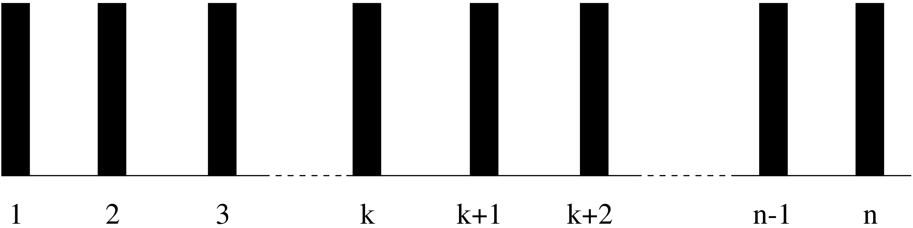
Figure 1.1: A Row of Dominoes
Induction is easy to understand and usually straightforward to use. It is a very good technique to have
in one’s mathematical toolkit. It can be illustrated using the small blocks called dominoes. If we line
up a row of dominoes along the floor so that each domino is close to another, then we can tip over the
entire line of dominoes by pushing over the first one. Such a row of standing dominoes is shown, from the side, in Figure 1.1.
Notice that we do not show all the dominoes, just the first three, three somewhere in the middle and the
last two.
Induction works on a list of statements. Each statement is undeniably true or false.
Also, each statement depends on its order in the list. One such statement might be that if we
knock over the first domino, then the second will tip over. More generally, we might say
that if domino is knocked over, then it will knock over domino . Induction works in two steps.
Step 1.
Show that statement 1 is true.
Step 2.
Show that if statement is true, then statement is true.
If both of these steps are satisfied, then we know that all statements must be true.
Figure 1.2: The Steps in Induction
If we show that if we knock over the first domino, the second domino will fall, we have shown Step 1.
If we then show that any domino tipping over will cause the next in line to be knocked over, then
we have satisfied Step 2 and we then know that all of the dominoes will be knocked over when we tip over
the first one. Figure 1.2 illustrates these two steps.
Now we can use induction to prove our theorem.
Theorem 1.2.
Given a scalar and scalars from a field, then
Proof.
We will accomplish the proof using the two steps of induction.
Step 1.
This is easy. From the distributive law we have that . Or
Step 2.
We must show that if
is true, then
is true. We assume the first equation is true
and add to both sides.
which is the same as
which is what we wanted to show.
By induction we have shown that
∎
Problems 1.3
1.
Show that has no subfield other than itself.
(We say that has
no proper subfields, i.e. subfields that have less scalars than .)
2.
If you are really ambitious, show that the collection of scalars of the form
where is
a subfield of . Use Theorem 1.1.
3.
Suppose . Is ?
4.
Suppose we have two scalars and from a field. We can define scalar subtraction
to be the binary composition of adding to the additive inverse of . In other words,
. Since and for any field , we can show that in
any field.
Show that in any field .
5.
Show that if we have a matrix and a matrix over , then
(HINT: Use the theorem we proved that generalized the distributive law.)
Exercises 1.3
1.
Evaluate . (HINT: so )
2.
Given the product where , what value must have for to be
? What value must have for to be ? (We call any number where a
purely complex or imaginary number. The term imaginary is used for historical reasons and has absolutely
nothing to do with the actual existence of such numbers. All numbers exist in the minds of people.)
1.4 Linear Equations
NOTE: Unless stated otherwise, all examples, exercises and problems in this text
can be thought of as consisting of scalars from the rational or real fields.
In this section we will put together what we learned about matrices and fields with some
concepts of algebraic geometry.
The equation
is called a linear equation in two variables. The variables are and , one of which
must not equal zero.
The constants are , and . They represent numbers (scalars)
that do not change.
Some examples are:
In the first example, , and . In the second example, , and .
The third example has , and . The variables and represent all scalars
which make the equations true. In the second example, if then . If then
. We can see that the solutions for these equations involve distinct pairs of
scalars.
In geometry, all the scalars are real numbers. We write that .
Furthermore, geometrically, a linear equation represents a straight line in the plane. The variables
and refer to the two coordinates of the plane. We write to
refer to a particular point on the plane. The variable , the -coordinate,
refers to the horizontal
position of a point. The variable , the -coordinate, refers to
the vertical position.
This is very similar to the way we refer to entries
in matrices using row and column indices. The difference is that and refer to
real numbers. Indices only use the counting numbers or the integers ().
All the pairs of scalars which are solutions for a linear equation are called the graph of
the linear equation. We draw graphs of linear equations by putting in as many points as we need so
that we might distinguish one equation from any other. Some examples of drawings of graphs are given below.
(Even though it’s not technically accurate, from now on we’ll use the word graph to mean
the drawing of a graph.)
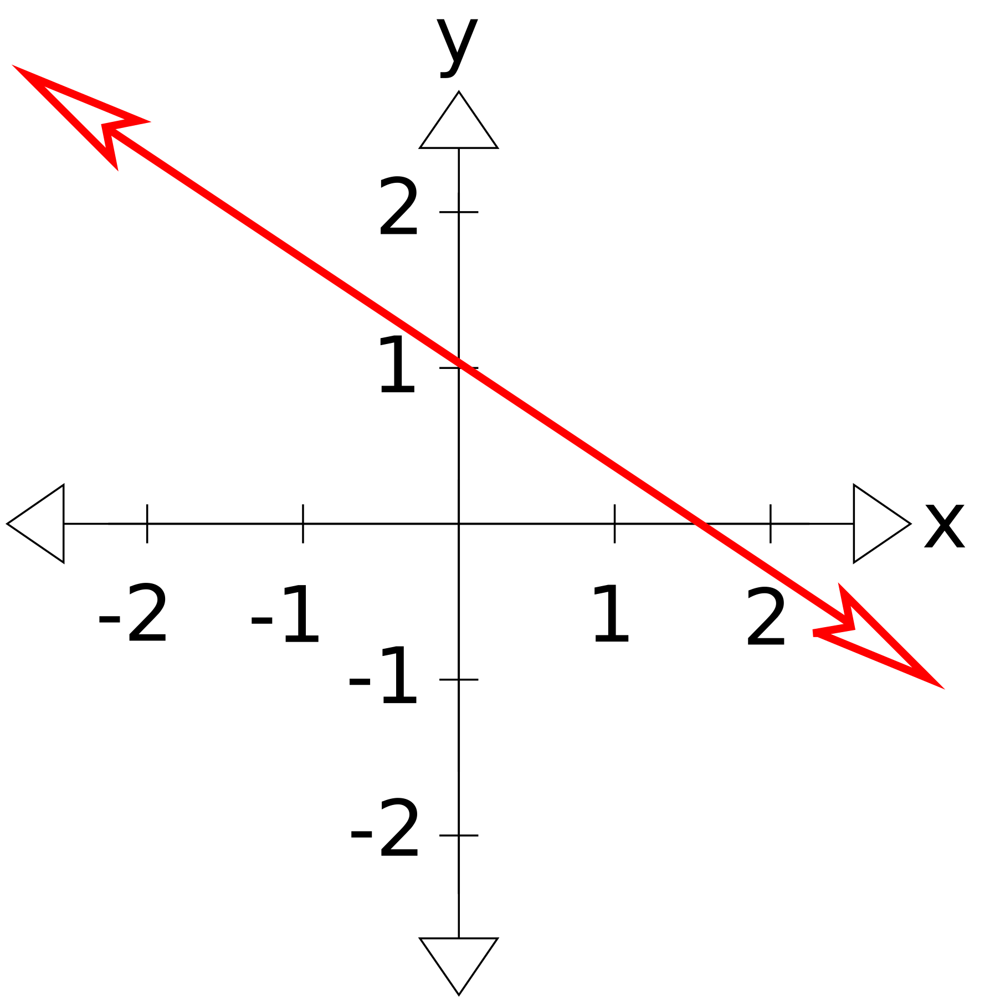
Figure 1.3:
The graph in Figure 1.3 represents a
plane with the line
formed by the linear equation . The vertical line labeled is called
the y-axis. Similarly the horizontal line labeled x is
called the x-axis. In order to draw the line we have to use
a few of the algebraic properties of the real number field.
We want the variable to be alone on the left side of the equation.
So first we subtract from both sides.
This gives us
Then we multiply both sides by .
Notice that we had to use the distributive law on the right side of the equation.
This allows us to finally write
Putting the equation in this form makes it easier to compute a value
for a given (we call this solving for y).
For instance, let . Then .
We can see that the point is on the graph of the equation. This point is
called the y-intercept of the equation because it is where
the line cuts the y-axis.
As you may have already surmised, there is also an x-intercept. We
let and solve either the original equation or the altered form
. Let’s stick into the original equation.
So the point is the x-intercept of the line.
In order to draw a graph we first draw the x and y axes (the plural of axis),
mark the points and place a ruler lined up against them to draw the line. (Or we can use
software to do it for us, which we will do with Lampp).
Instead of writing we could just write .
In other words, we have a matrix with one row and three columns. All we need to keep in mind
is that for a linear equation , the first column would refer to and the second to .
The matrix would be another way
of representing a linear equation. (The constants and are often referred to as the
coefficients of the linear equation and the constant is called a constant term.
The symbols and represent the variables.)
Of course we are not limited to two variables. A linear equation in variables is
an equation that can be written in the form
where and are scalars of a field. We would write this in matrix form as
. A solution of
this equation would
be a collection of scalars that makes the equation true. That is:
We will see shortly that this method of representing linear equations is very useful. First, however,
we will learn to use Lampp to graph lines and become familiar with this representation.
Problems 1.4
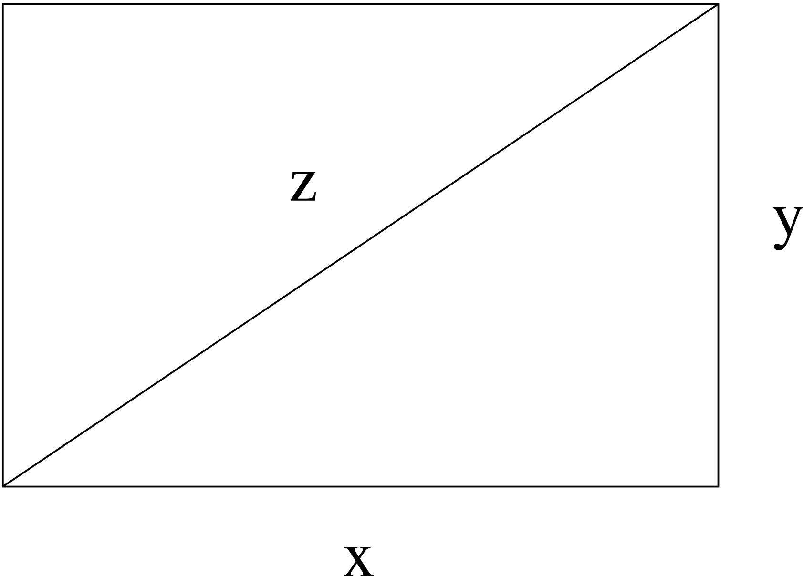
Figure 1.4:
1.
Suppose we have a linear equation where all the coefficients, variables and the constant
are scalars from the rational number system. We could also draw the graph of such an equation.
However, not all numbers on the line would be represented. One such number was discovered by
ancient Greeks when they studied the size of the diagonal of a unit square (a square
with sides one unit long). They already knew that the length of the
diagonal of a rectangle
was related to the length of its
sides using the famous theorem of Pythagoras
which says that (see Figure 1.4).
In other words, if then . (Since we say that .)
If the ratio of the diagonal to a side of a unit square was a rational
number in its lowest form, we would have
or that
This would mean that is even (divisible by ). This means we could say that
and that
and ultimately
This means that is divisible by . However, we assumed that was
in its lowest form, so and can’t have a common factor. This means our assumption about
being able to have the ratio of the diagonal to the side as a rational number is
impossible in this case. We say that is irrational (not a rational number).
Give examples of other irrational numbers.
2.
In the preceding problem we assumed something and then showed that this assumption
leads to a contradiction. Therefore our assumption is wrong and the opposite of what we assumed
must be true. Mathematicians use this type of proof by contradiction
all the time.
Prove by contradiction that . (HINT: Assume that and
show that this leads to a contradiction.)
Exercises 1.4
1.
Let be a linear equation in the reals. What is the -intercept?
What is the -intercept?
2.
If is a linear equation, what would be an equation for
the -intercept? The -intercept? (HINT: In each case we know the value of
one of the variables. Replace that variable with this number and solve for the remaining
variable.)
3.
Let . Solve this for . (HINT: We just want by itself on the
left of the equals sign.)
4.
Let . Solve this for . The equation you develop is called the point-intercept
form of the linear equation. What is the -intercept of this line?
5.
Let . Is this a linear equation?
6.
A man starts up a ramp that is 10 meters long and 2 meters high at the far end. Determine
a linear equation that will give how high the man has risen for any horizontal distance he has
traveled from the starting point. Use this equation to show how high he has moved when he is 8 meters
from the start of the ramp. What is the actual distance he has traveled along the surface of the ramp?
(HINT: Use the theorem of Pythagoras.)
7.
A carpenter makes a wooden frame that is 3 meters by 4 meters. How can
she use a tape measure and the theorem of Pythagoras to make certain that the frame is rectangular
(all interior angles are )?
1.5 Using Lampp to Graph Linear Equations
We have seen that we can represent a linear equation with a matrix of one row and
three columns. We can graph a linear equation if it is composed of real or rational scalars.
We shall do so now. We assume a working installation of the Lampp program on a PC or tablet. Information on obtaining the app can be found
in the Appendix: Lampp on your Computer.
Figure 1.5: Lampp app with two rows selected
Depending on our device, we should see the Lampp app as something similar to Figure 1.5.
Activating features in Lampp is effected through selecting button or tab images by clicking mouse buttons or by touching or swiping on a touch screen.
Clicking on the left mouse button when the cursor is at a certain location is usually identical to touching at that point. Right-clicking is equivalent to two
touch screen actions: holding a touch and swiping right. The middle mouse button operation will usually accomplish the same effect as swiping downwards.
At the bottom middle of the Lampp screen is the Matrix tab. Left-click or touching this tab will cause the Matrix pane to slide up.
You will see Figure 1.6. Use your device’s keypad (real or virtual) to change the number of columns from 4 to 3. Activate the green Set control by left-clicking (or touching).
Figure 1.6: Creating a new matrix
A confirmation dialog box may appear. If so, click OK. A matrix of order by will be created (see Figure 1.7). Notice that some entries contain zero and
some entries contain one.
Figure 1.7: A new matrix
Note that the default field is the rational numbers. The values of the entries correspond (in this case) to the leading coefficients of linear equations of the form:
, where is the row number and the ,,’s are, respectively, associated with the columns of the matrix.
Activating the Graph tab on the bottom right of the Lampp app will cause the Graph panel to slide up (see Figure 1.8). Each line is drawn for each row
of the matrix. Clicking on the Line button on the bottom right of the Graph panel will cycle through each row equation.
Figure 1.8: Calling up the Graph panelFigure 1.9: The Edit panel and two selected entries.
In order to change the coefficients of the equations we are graphing, we need to use the Edit function. We select matrix entries to
accept input by positioning the mouse cursor and left-clicking or simply touching the scalar we wish to change. The entry will become outlined and
will now have a green background. Tapping or clicking again will deselect the entry.
After choosing one or more entries, select the Edit tab at the bottom of the screen. The scalar editor panel will slide up (see Figure 1.9).
We can place numbers into the numerator or denominator of the Edit panel by first selecting for input with touch or the mouse or tab key and then
typing in a value. Choosing the Set control will then have that value overwrite the selected matrix entries.
You should now feel free to experiment with graphing different linear equations. You should also
check out the and buttons in the scalar editor panel to see what they do.
Exercises 1.5
1.
Put a in the first column of the matrix, a in the second and a in the third. Graph the linear equation.
2.
Put a in the first column. Graph the equation. This scalar, the coefficient,
is called
the slope of the line. See what happens when you change its value. Write out a linear equation for this line.
3.
Make , and . In other words, put a in the first two entries and a in
the third entry. Graph the equation. Try changing the value of and see what happens.
4.
Let , and . What happens to the line when the value of is changed?
1.6 Systems of Linear Equations
As remarked earlier, a linear equation in variables is an equation of the
form . When we have two or more of these equations, each one
using the same variables , we have a system of linear
equations, where is the number of such equations.
For the fields and we can represent two-variable linear equations geometrically as
lines on the plane. For example,
represents three lines on the plane. A solution of this system would be all the pairs of numbers
that
satisfy all of the equations. Geometrically this would be all the points that the
three lines have in common. This would happen when all three lines meet at a single point or
all three equations represent the same line (the lines coincide or are coincident).
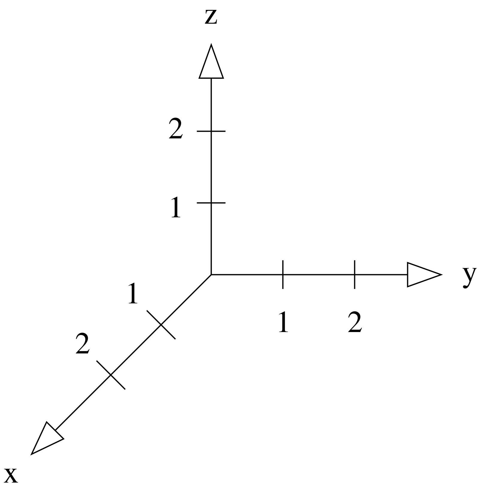
Figure 1.10: A projected 3-dimensional coordinate system
A solution for a system of equations can be obtained algebraically. For instance, suppose the first two
equations in the example above were a system. We would take the first equation and
transform it into . Now we replace all occurrences of in the second equation
with . We would get which we could write as or .
We then take this value of and put it in either of the two equations to get a value
for . The first equation would give us which we could manipulate to
give . (Using the second equation will give us
the same answer.) So we know that the two lines intersect
at the point .
A linear equation in three variables can be drawn as a plane in three-dimensional space.
We add the -coordinate to the and coordinates. This is easy to visualize. A box has
width (-axis), height (-axis) and depth (-axis). A two-dimensional representation of these three
coordinates is given in Figure 1.10. A solution of a system of linear equations in three
variables can be thought of geometrically as the point or points where all three planes meet. If they don’t
have points in common, we don’t have a solution. A system of equations that has
no solutions is called inconsistent. If it has one or more solutions then
it is called consistent.
Geometry fails us when we deal with more than three variables. In fact it is not uncommon for people
to deal with thousands of linear equations in thousands of variables. Linear algebra is used to discover if
solutions to these systems exist, to find out if an existing solution is unique, and to discover how to calculate all the solutions.
Problems 1.6
1.
Show that the system defined by
is inconsistent. What does this mean geometrically?
1.
Geometrically, what are the two ways a system of linear equations with
three variables can have solutions?
2.
Give equations for three lines that intersect at one point. In other words, give
a system of linear equations in two variables that have a unique solution.
Exercises 1.6
1.
Use Lampp to create a matrix corresponding to a system of the
first two linear equations from the example in this section. Graph the two lines.
2.
Create a rational matrix with entries as in the first exercise using
all three of the linear equations. Graph these three lines.
Alter the values of the entries in the third row to try and get the three lines to meet at one point.
What would be the linear equations for these lines?
3.
Create a matrix with the values
.
Graph this matrix. Make the first entry and the second and graph it again. Make the third entry
and
the first two equal to . What does this graph look like?
4.
Create a matrix so that all the entries are non-zero. Graph the matrix. Try and
alter the entries so that the two planes never meet.
5.
Give an example of two linear equations for coincident lines. Use Lampp to graph these equations.
6.
Solve the following system of equations:
(HINT: First find in terms of in the third equation. Then put this into the second
equation. Then find in terms of in the transformed second equation. Then put the value of
and the value of (both in terms of ) into the first equation. Solve this for . Then use
this number to calculate and ).
7.
Lampp interprets the first three entries of a row in a matrix with four columns as the variables for a 3-dimensional coordinate system. The linear equation is graphed as a portion of a plane in 3-dimensional space projected onto a 2-dimensional representation of a 3-dimensional box. Draw and label (with and ) the coordinate system of the box.
(HINT: Create a matrix with and graph various planes.)
1.7 Linear Inequalities
When we defined the absolute value of a real number, we said that if is greater than
or equal to 0 and
if is less than 0. Thus , for instance.
We will use the symbols and to stand for greater than and
less than, respectively. Thus is true, but is a false statement. We also use the
symbol to mean greater than or equal to and the symbol for less than or equal to.
Statements involving these four symbols are called inequalities. A
linear inequality is a linear equation with one of the four inequality symbols used instead of
an equals sign.
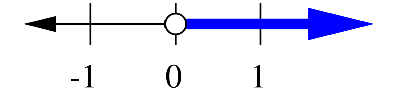
Figure 1.11:
A linear inequality in one variable can be described as a section of the line formed by the -axis
on the graph of a plane. For example, would mean all the points to the right of 3 and the number 3 itself.
The inequality would look the same except that it would not contain 3.
Figure 1.11 is what we usually would draw for a one-variable linear inequality. We use an unfilled circle,
, at 0 on the line to indicate that does not refer to zero. Figure 1.12 shows the
inequality where can equal zero.
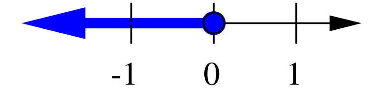
Figure 1.12: 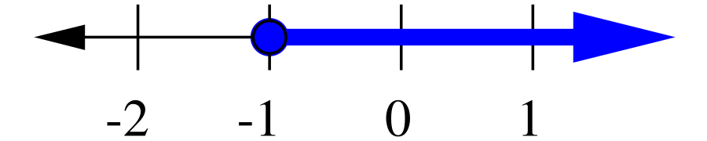
Figure 1.13:
Figure 1.13 is an example of a linear inequality using the variable as we
would normally draw it on the -axis. Figure 1.14 uses the variable in the inequality
as it is drawn on the -axis. We are free to draw on any line in whatever direction we choose
as long as we are careful to label our diagram properly. Usually, though, we stick to conventions and
use the -axis to draw one-variable inequalities.
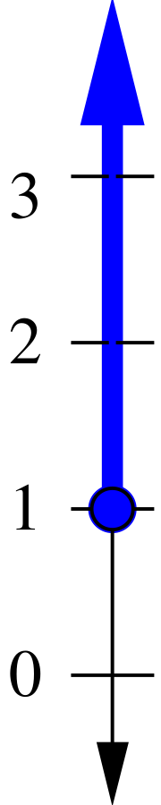
Figure 1.14:
As with linear equations, we can have a system of linear inequalities. In one variable this sytem gives
a solution when the inequalities overlap. Figure 1.15 displays all the points that satisfies
the system of inequalities given by and . It is easy to see that 3 satisfies this system but
that -1 or would not.
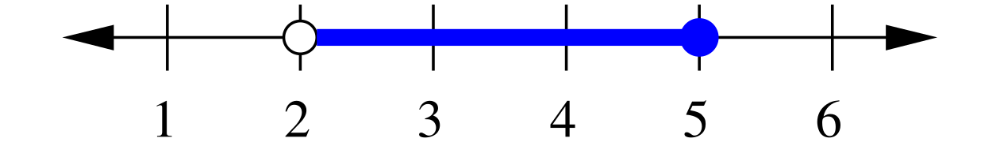
Figure 1.15: and
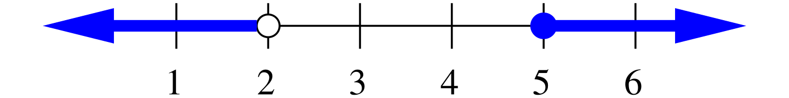
Figure 1.16: or
When a system of inequalities does not have a solution, we say it is inconsistent. Figure 1.16
is an example of an inconsistent system of linear inequalities. We cannot have that is less than 2 and
be greater than or equal to 5 at the same time.
We sketch one-variable systems of inequalities on a line. Two-variable systems are drawn on a plane where
each of the variables refers to an axis. The procedure to do this is quite simple. Suppose we had the
linear inequality . First we would draw the line for the equality . Since must
be greater than this line, all the pairs of and points which satisfy the inequality would lie
in the section of the plane above the line. A solution to a system of inequalities would be all the
points in a region of a plane which satisfy all the inequalities, if such an area exists. We will examine
one such system.
Figure 1.17: and and
Figure 1.17 gives us the solution to the system of inequalities
We might start to draw such a graph by first drawing the line , which is parallel to
the -axis and cuts the -axis at 1. Our inequality is so we draw this line with dashes
to indicate that points on this line are not to be included. Then we would shade the region of
the plane to the right of this line. This shaded area contains all pairs of points where
is greater than one. We next draw the with a solid line because our inequality, ,
contains all the points on this line. We pick a point, say and , which falls below
the line .
For these coordinates , so obviously this point does not satisfy the inequality .
We then shade the region above the line . Finally we draw a
dashed line for and shade the graph under this line (Why?). The area which is overlapped
by all of this shading is the portion of the plane with points which satisfy all of the
inequalities.
Problems 1.7
1.
We can rewrite the inequality by adding -1 to both
sides of the inequality sign. We would have which would give us the same results
as . We can add or subtract the same term to both sides of an inequality without affecting
it. The same can be said for multiplying each side of the inequality by a positive scalar.
Show that multiplying both sides of inequalities by a zero or a negative scalar does
affect the inequalities. How does it affect it?
2.
Multiplying both sides of an inequality by a negative number switches the direction of the’
inequality. Multiplying both sides of by -1 would give us . Multiplying both
sides of an inequality by 0 will either give us a trivial or wrong result. Multiplying both sides
by a positive scalar does not affect the inequality. Why, then, can we not multiply both sides
of an inequality by a variable?
3.
The absolute value of a variable in an inequality, , for instance, actually gives rise
to a system of two inequalities, and . What would be the two inequalities
generated by ? What would be the two inequalities generated by ? What about
?
Exercises 1.7
1.
Graph the following inequalities (HINT: Use Lampp to
graph the equalities, redraw these on paper and shade the correct regions.)
a.
b.
c.
d.
2.
Graph the following systems of inequalities
a.
b.
c.
d.
3.
Graph the following systems of inequalities
a.
b.
c.
d.
Chapter 2 Row Operations
2.1 Gauss-Jordan Elimination
As we have seen, a linear equation can be represented as a matrix
of one row. A system of equations can be written as a matrix with
as many rows as there are equations. For example:
could be written as
Here the first column refers to the coefficients, the second column to the
coefficients, the third to the coefficients and the fourth to constant terms.
We would call a matrix made up of the first three columns a coefficient matrix and
the matrix made up of just the last column a matrix of constant terms.
A general system of equations in variables,
is written as a matrix
By simply making sure that coefficients for each variable are entered
only in the column assigned to that variable we save a lot of writing. This is
not the only good reason to do this. It also makes it much easier to perform
the algebraic operations needed to solve a system of equations. We do this
by defining row operations.
Definition 2.1.
Row Operations
Operation
①
Interchange any two rows.
Operation
②
Multiply all entries in a row by a nonzero scalar.
Operation
③
Add a multiple of one row to another row.
Below, we give some examples of these three operations and show how they affect the corresponding
system of linear equations.
We apply Operation
① to row 1 and row 2.
We demonstrate Operation
② by multiplying across the third row by .
We show Operation
③ by multiplying row 1 by and adding it to row 2.
Note that we do not change row 1.
We will continue using row operations until we have the matrix of coefficients
(the first three columns of our matrix) in the form:
One way to proceed would be to use Operation
② and multiply row 1 by .
Now we will use Operation
③ again to add times row 1 to row 3.
And then we’ll add times row 1 to row 2.
Let’s add row 3 to row 1 (we are using Operation
③ and multiplying row 3 by 1 before we add it.)
Then use Operation
② to get a in column 2 of row 3 by multiplying by .
Now we use Operation
③ and add times row 3 to row 2.
Now multiply row 2 by (use Operation
②.)
Subtract row 2 from row 3 (i.e. multiply row 2 by and add it to row 3).
Multiply row 3 by
Add row 3 to row 2.
Finally, multiply row 3 by - and add it to row 1.
We can see that by using the row operations we have solved the system of
equations. We check this by trying these values in our original
equations
Which row operations we use to follow this procedure (called Gauss-Jordan elimination)
and in what order
is mostly a matter of taste. We usually try and pick the row operations to perform that
will minimize the amount of calculation we need to do.
The preceding example could certainly have been done with fewer row operations.
Problems 2.1
1.
Do we really need three row operations? Operation
①, where we interchange two
rows, could be replaced by applying the two other row operations. Show that this is true for any matrix.
Show that this is true for any matrix. (HINT: Remember that an entry of the th row in a matrix , for example, may be referred to as and that an entry in the same column in the th row is .)
2.
Show that it is possible to replace Operation
② using only Operation
③ for any matrix where all entries in row 3 are zero.
3.
Prove that Operation
① can be replaced by using the other two row operations for any size matrix as long as the matrix has more than 2 rows and it contains a zero row.
4.
In Chapter 1 we talked about postfix notation. Invent a postfix notation to represent row operations.
2.2 Row Operations and Lampp
To the right of a matrix created with Lampp, an Operation panel can be opened.
It is used to execute one of the operations on the rows selected with the right
and left mouse buttons (or by touching or touch-and-holding, respectively).
In the matrix display, the matrix is indexed by the row of numbers in round-cornered box icons both
above and to the left of the entries. By using the left mouse button to click on one of the
left icon indices, that row will become blue to indicate that it has been selected. Touching will do the same on a touch-screen.
We will call this left-selecting the row. The
corresponding number of that row will be transferred to icons in the Operation panel.
By clicking the right mouse button on a row icon (or touching-and-holding for more than 1 second), that row will become gray and the associated
row icon in the Operation editor will be given that row’s index. We will call this right-selecting. The radio buttons to the left
of each operation listed in the Operation panel are used to select which operation to perform when the Set button is
clicked. Figure 2.1 shows this panel.
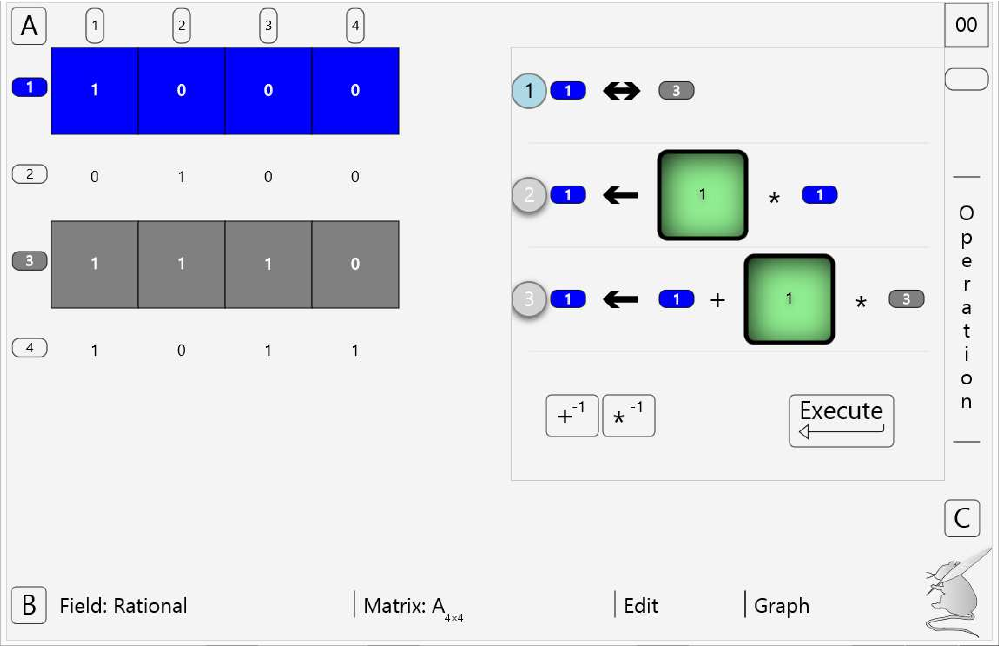
Figure 2.1: The Operation pane
The scalar entries in the Operation panel can be modified in the same way as the entries in
the displayed matrix. Non-zero values in the scalar of the Edit panel are automatically sent to overwrite Operation scalars by clicking on the Edit panel Set button.
Just before an Operation is performed the value of the matrix is first saved and the value of the button at the top right is incremented. One may scroll through the
values of the matrices for each operation performed on the matrix using this button. With a mouse, clicking on the top, left corner will show the result of the previous operation. Clicking on the
bottom right corner will increment the matrix shown (if possible). Clicking on the top right will show the base setting of the matrix; the matrix before any operation was executed. Clicking
on the bottom left will show the matrix after the last operation executed. On a touch screen, these actions are accomplished by swiping down on the button, swiping up, swiping left and swiping right, respectively.
Exercises 2.2
1.
Use Lampp to follow the example of Gauss-Jordan elimination given in this chapter.
2.
Use Lampp to find the solution of the example using less row operations.
3.
The original equations in the example had only integer coefficients and integer constant terms.
The solution values were also integers. Can you find a way to solve the system that doesn’t involve
any pure fractions (rationals that are not integers)?
4.
Use Lampp to graph each step of the example. Then graph each step of the quicker method
you found. What can you say about the difference between them?
2.3 Reduced Row Echelon Form
Definition 2.2.
If a matrix has the following two properties, it is in row echelon form.
1.
Any row consisting entirely of ’s appears at the bottom of the matrix.
2.
For any two consecutive rows with one or more nonzero entries, the leftmost nonzero entry
(also called the leading entry or
pivot) of the lower row is to
the right of the upper row leading entry.
Definition 2.3.
A matrix already in row echelon form is in reduced row echelon form if
1.
In any row, the leading entry is a .
2.
Any column containing a pivot has zeros for entries everywhere else in the column.
Once we have a few examples these definitions will not seem so daunting. The following two matrices are in reduced row echelon form.
Following are some examples of matrices that are not in reduced row echelon form.
We can see that the example on the left has a in the column containing
a leading entry, so this violates condition 2 of Definition 2.3. This matrix is, however,
in row echelon form. The example on the right
violates condition 2 of Definition 2.2 as the leading entry in row 2 is further to the right
of the leading entry in row 3. This matrix is not even in row echelon form and so cannot be in reduced row echelon form.
Another phrase used for a matrix (or system of equations) in reduced row echelon form is row canonical form.
Since a field always has a and a , we can see that the definition
of reduced row echelon form will apply to any matrices in any field. Let’s look
at an example111
A very artificial example. of a matrix in the binary field.
Recall that the binary field consists solely of the numbers and and
obeys the same laws of addition and multiplication as do the integers except
that . We will use these scalars to illustrate how use row operations
to put a matrix in reduced row echelon form.
We will create with scalars from the binary field. The matrix will represent a grid of people. Each row will represent
a group of egg-throwers. Each member of the group is able to hold at most one egg in their hands at a time. If someone throws them an egg,
they will drop their own and fail to catch the incoming egg. The eggs are raw.222
This is not important, just more fun to imagine.
If somebody throws their egg, they will immediately be able to pull a new egg out of their pocket.333
It’s magic. So, any member of
a group will either have one egg in their hands or none. They can only throw an egg if they are holding one. They can also throw an egg if they have one in their
hands and be able to immediately get another. Otherwise, the only time anybody can gain an egg is if they aren’t holding one already and someone throws them one.
Each group is made up of five characters: Larry, Moe, Curly, Shemp and Emil. We can refer to them by subscripts. For example, Larry2 would be
the Larry in row 2. We further add the condition that a character can only throw an egg to another character with the same name. Only a Moe can throw to a Moe, for instance.
We also stipulate that all members in a row will throw any egg they have the same distance at the same time. If Shemp3 throws his egg to Shemp1, then
Larry3, Moe3, Curly3 and Emi3 will throw their eggs, if they have one at hand, to Larry1, Moe1, Curly1 and Emil1, respectively.
Now let’s use the and compositions for the binary field to
put this matrix in reduced row echelon form. First we add row 1 to row 3 (we
use Operation
③ to first multiply row 1 by and then add this row to row 3). This means
that everyone in row 1 will throw their eggs to their namesake in row 3.
Then we add row 2 to row 4 (three eggs get tossed, six eggs get broken!)
Our final two row operations would be to add row 3 to row 2 and to add row 4 to row 1.
A little thought assures us that this final matrix gives us the minimum number of eggs that can be held at any point in the egg-hurling process, given the initial conditions.
This is a trivial (humorous?) example of the use of binary numbers to model a ‘game’. But actual problems similar to this occur in the design
of circuits and networks (although the problems are enormously
more complicated and generally involve solution techniques beyond linear algebra.)
It is possible for companies to save millions of
dollars in production costs by identifying the minimum conditions necessary to
obtain certain results.
In each step of the Gauss-Jordan elimination we come up with a new
matrix. We say that a matrix is row equivalent
to another matrix if it is possible to produce one matrix from another using
a finite number of row operations.
Problems 2.3
1.
Write out a procedure for using row operations to put a matrix
in reduced row echelon form. You might start with:
a.
Move all zero rows (rows with only in its entries) to the
bottom of the matrix using Operation
①.
2.
For a matrix in reduced row echelon form and
where , what
is the least number of zero rows that can have?
3.
If we had the matrix
where , show that the reduced row echelon form is
4.
If we had a matrix composed of only nonnegative real numbers,
each of whose rows and columns sums to 1, why would such a matrix have
to be square?
444
In mathematics, especially in probability and combinatorics, such
a matrix is called a doubly stochastic matrix
(also called bistochastic). Can you think what just
a stochastic matrix would be?
5.
Column operations are the same operations as row operations except they are performed on the columns of a matrix.
When would a matrix in reduced row echelon form be equal to the matrix put in reduced column echelon form? In other words, if is row equivalent to ,
then can be column equivalent to ?
6.
Do you think the reduced row echelon form of a matrix is unique?
Exercises 2.3
1.
Put the following matrices in reduced row echelon form. Assume
that all entries of .
2.
Use Gauss-Jordan elimination to solve the three following systems of equations.
3.
In regards to the matrices associated with the systems of linear equations in
the previous problem, what row operations were used to transform the first matrix
into the second? The second into the third?
4.
Use Lampp to create the binary matrix of the example of the pie fight.
To do this click on Field
in the menu strip and select Integer Modulus a Prime. Accept the default for the prime modulus, which
is . Create the matrix as you would for the rational field.
Send values from the
scalar Editor panel and use the and buttons to populate the matrix. Then use
the Operation panel in order to put the matrix in reduced row echelon form. Can you
reduce the matrix without using Operation
③? Why or why not?
5.
The following problem comes from a Chinese text over 2000 years old. Use Gauss-Jordan elimination
to solve it.
There are three types of corn, of which three bundles of the first, two of the second, and one
of the third make 39 measures. Two of the first, three of the second and one of the third make 34 measures.
And one of the first, two of the second and three of the third make 26 measures. How many measures of corn
are contained of one bundle of each type?
2.4 Parameters
We have seen previously that some systems of equations can have many solutions.
For the rational, real and complex fields, we
have either only one or an infinite number of solutions if any solutions exist.
For example, when we had intersecting lines
we had only one solution, the point where they crossed. If the lines were coincident then
any point on either line was a solution. In this case either equation could be used to express the solutions
for this system. Things got a little more complicated when we talked about planes intersecting.
We saw that two planes could intersect at a point or a line. The planes could also be coincident.
When we have an infinite number of solutions, like when two planes intersect at a line,
we give an equation as an answer, in this case the equation of the line.
In order for a system of linear equations to have a unique solution we must have
the same number of variables as we have equations. This is a necessary condition but it
is not a sufficient condition. A system of linear equations with the same number
of variables as equations could still have an infinite number of solutions. How do we
know when a solution is unique? How do we express the solutions if there are an infinite
number?
We start to answer the above questions by introducing the rank of a matrix.
Definition 2.4.
Suppose we have a matrix and another matrix in reduced row
echelon form such that is row equivalent to , then the rank of is
simply the number of rows of that contain leading entries.555This is not a very good definition but it is accurate enough for our present purposes. A general definition, involving more advanced concepts, will be given later as Definition LABEL:rankdef.
If we had an matrix such that the rank of equaled , then
we would have a unique solution given by column of the reduced row echelon matrix
that was row equivalent to .
If the rank is smaller than , we have many solutions. Let’s consider one
such case. Say we have the system
This system represents two planes. Its associated matrix would be
This matrix takes the reduced row echelon form
Which corresponds to
We can use a little algebra to solve for and in terms of .
and
For any given we can now easily calculate and values. Say we
have an arbitrary scalar (in this case since we are talking about
planes). Let and we have the solutions
, and
This variable is called a parameter.
Of course the solutions for some systems can have more than one parameter. Consider the
system
We can allow and to be any numbers in the reals (which happens to be the field
we are interested in at the moment). To give the solutions we must introduce two
parameters and which represent any real numbers. We let
and so that we get
We can write out the solution as a matrix of one column
where the row indices correspond to the indices of the variables .
Problems 2.4
1.
Given a matrix , give a formula for the number of parameters1
you would need for a solution. (HINT: Assume that the rank of is equal to .)
2.
Consider the system of linear equations
where and are constants.
What value must have for the system to have no solution?
Infinitely many solutions? Can it have exactly one solution? (HINT: find
the reduced row echelon form of the associated matrix. Whenever we have a reduced row
echelon matrix equivalent to a linear system of equations such that there is a row
which has all zeros for the coefficients but otherwise has one or more non-zero entries,
we say the system is inconsistent
and has no solution.)
3.
Consider the system of linear equations
where and are variables.
What values must and have for the system to have solutions?
(HINT: find
the reduced row echelon form of the associated matrix
Then interpret the non-zero entries of the bottom row as coefficients
for an equation using and as variables. Show how and must be related for
the system to be consistent.)
4.
Assume that the following system is in the binary number field.
Give the list of parameters as a matrix. How many unique solutions are there?
What are they?
Exercises 2.4
Solve the following problems by introducing parameters. Unless otherwise
stated, assume that the systems are over the reals (all scalars ). Give each solution as a matrix of one column.
1.
+
+
2.
3.
4.
5.
For each of the previous exercises use Lampp to graph the system. Choose values for the
parameters in the solution and calculate the result. Notice how each result can be identified as the coordinates of a single point
on the plane segments of the corresponding graphs. Try to identify the position of the point on the graph.
6.
A wine company wants to create a product that has percent alcohol by
blending together three wines which have alcohol contents of , and
percent, respectively. How much of each type of wine will go into one bottle?
(HINT: give each of the volumes of the three wines a variable name, say , and .
So we know
because this would give us the desired percentage of alcohol. We also
know that
because the total volume of the three wines must equal the volume of one
bottle of the blended wine.
Now use parameters to solve this system. Notice that the parameter you
calculate has limits on its values in order to give sensible answers.
What values can the parameter have?)
Chapter 3 Matrix Arithmetic
In some ways we have been rather fast and loose about what the associated
matrix is for a system of linear equations. We will now introduce the
properties of matrix arithmetic that will clear up
the inconsistencies.
3.1 Matrix Addition and Scalar Multiplication
Definition 3.1.
For any two matrices and , the sum
of and
is a matrix with entries for
and .
One example should suffice. Suppose we had the two matrices
Then would mean
It is easy to see that matrix addition is commutative (). It should
be equally apparent that matrix addition is associative ().
If we had a matrix and a second matrix of the same order with all of its
entries equal to zero, the second matrix has all the properties of an identity
for matrix addition. We reserve the bold symbol for such a matrix and have
. We call the zero matrix. The order of is usually determined by
its use in an equation to save us from having to write .
We define the product of a scalar and a matrix
as the matrix such that if and only if for any
pair and such that and .
If we have then is the unique additive inverse of and .
Note that Operation
②
of our row operations is simply the product of a nonzero scalar
and a matrix of one row.
Problems 3.1
1.
How would you define matrix subtraction?
2.
For a scalar and two matrices and with orders such that addition
is defined, is ?
3.
Show that and that .
4.
Show that .
5.
If and have the same rank, is necessarily defined?
6.
If , is the rank of the same as the rank of ?
7.
If and are in row reduced echelon form, what
can you say about the rank of ?
8.
Show that if and , then .
Exercises 3.1
1.
Assume that and are over . Find . Find .
2.
Assume that and are over the binary field. Find . Find .
(HINT: You can use Lampp to do this by creating a matrix
with the first three rows being and the bottom three rows being . Then use
row Operation 3 to add the rows of to .)
3.
Assume that and are over . Find . Find . Find . Find .
(Note that, in this case, .)
3.2 Matrix Multiplication
Matrix multiplication is not so straightforward. We do not simply multiply each corresponding
pairs of entries. We will use the notation we introduced earlier and give the complete
definition. Then we will give special examples that will make the definition clearer.
Definition 3.2.
For two matrices and over some field ,
the product of
and is a matrix such that
for all pairs of such that and .
We would say that .
First notice that has the same number of columns as has rows. This means that
is not defined unless . Thus matrix multiplication
is not commutative in general.
Let’s look at an example when and . Let
and let
then
Since we refer to any matrix as just a scalar, we could write
. Multiplying any matrix of just one row and a matrix of just one
column (when they are of the proper order for multiplication to be defined)
will result in one scalar.
Let’s redefine and so that
and
We would then have
It is apparent that is an entry made up of the matrix product of
row 1 of and column 1 of (the only entry that column has).
We can see now that the system of linear equations
could be written as where
and
would be the matrix of coefficients and would be the matrix of constant terms.
When we used Gauss-Jordan elimination, we put the matrix of coefficients
together with the matrix of constant terms to create
what is called an augmented matrix.
Some people will draw a line between
columns to distinguish the matrix of coefficients from the matrix of constant terms.
This is a special example of a partitioned matrix, one where parts of the matrix
are sectioned off to form submatrices.
Following are examples of an augmented and a partitioned matrix.
The partitioned matrix could also be written as a matrix with
each submatrix indicated. For example
Note that refers to a submatrix of and refers to a scalar
entry of .
The use of augmented and partitioned matrices is a convenience we will take advantage of
from time to time.
Matrix multiplication, like matrix addition, also has an identity. We give this identity matrix the
special symbol . It has the properties that and .
Like the matrix, takes on the order necessary to make the
preceding properties true. This was why we were careful to give both examples. For instance,
if , then implies that is, in this case,
. If , then is . So what does
look like?
Definition 3.3.
is an matrix such that for
and for all and and .
An example would be
We can see that is a square matrix (a matrix with the
same number of rows as it has columns)
which has ones for its diagonal entries and is zero everywhere else.
For some square matrices , there exists a matrix such that
. We call the inverse of . The inverse
of a matrix is very important and deserves its own section.
Accomplishing matrix multiplication by hand can be very messy unless care
is taken to eliminate arithmetic mistakes. We can define a procedure
to multiply two matrices that involves a bit of writing but helps us
keep track of each step. Suppose we wanted the product
Since we are multiplying a matrix with a matrix,
the product will be a matrix, a matrix with entries.
Let’s create a table with rows and columns
Multiply every entry in each column from the second row down by the top entry in its column
Then for each row, add the entry that is three columns over to each of
the first three column entries. This is simply an example of matrix addition.
The matrix made up of the first three columns of the bottom two rows
is the product of the two matrices.
A numerical example would be
Write the rows of the right matrix across the top. Underline it.
Then place the first column of the left matrix under each entry for the
first row of the right matrix. Then place the second column of the left
matrix under each of the entries for the second row of the right matrix.
Then the same for the third column.
4
6
7
5
1
4
1
1
2
2
4
4
2
2
3
3
5
5
Multiply down each column by the topmost entry.
4
6
7
5
1
4
4
6
14
10
4
16
8
12
21
15
5
20
Then add the entries from column and to column for
for each of the rows other than the top row. Example: .
4
6
7
5
1
4
22
32
14
10
4
16
34
47
21
15
5
20
This gives us the product matrix
We can use Lampp to emulate this process. For instance, if we wanted the product
we would use Lampp to create a matrix, putting in all the
rows of into the first row. The other rows would be filled with repeated
columns of each column of as in our examples. Then we would use
column operations to accomplish the remaining calculations.
Column operations are the same as row operations except that, of course, they
act on columns. To get Lampp to use column operations, use the mouse (or your finger) to depress
the row button just above the Operation tab.. The button will change to
a column button. Use Operation
② and Operation
③ as appropriate.
Note that Operation
② does not let you multiply by a zero scalar. You
must accomplish this kind of multiplication by selecting all entries of a column which
has a zero in the first row entry and setting them to zero. You can do this very
easily by sending the zero to the Editor with the right mouse button (or right swiping), selecting
the entries with the left mouse button (or touching) and then clicking the Set button in the
scalar Editor.
Lampp is limited to creating matrices no bigger than so it can only be used for
multiplying small matrices. However, if you were stuck on a desert island without
enough bamboo and coconuts to build a computer and if you had a burning
need to multiply two matrices, you should now be able to do so.
Problems 3.2
1.
Matrix multiplication is not commutative, but it is associative. In
other words, provided all products are defined. We can
show this by letting and
. We want
to show that all of the entries of are identical to the entries
of . We start by showing what the entries of and are.
Similarly,
What values can and have in this statement?
Then since we can let and write
Why can we make this last statement?
Similarly if we let we have
Why can we interchange the signs in this last statement?
We have shown that so that .
2.
If is defined, show that .
3.
Show that . Assume that all matrix sums and products are defined.
4.
Let
Show that if and for two matrices and ,
then .
5.
Show that it is impossible to have a matrix such that
when
6.
Evaluate the following matrix product
7.
For the field , evaluate the following product
8.
Given and with .
Why can we always write but is only possible if ?
Exercises 3.2
1.
Show how the following systems of equations can be
written as arithmetical statements using matrices.
a.
b.
c.
d.
2.
The following matrices are over the field . Find the products.
a.
b.
c.
d.
e.
f.
g.
h.
i.
j.
k.
l.
m.
n.
3.
The following matrices are over the field . Find the two products.
4.
The following matrices are over the binary field. Find the two products.
5.
For a square matrix , and . In general, is
called a power of and is simply equal to the matrix multiplied by
itself times. For matrices over , find and .
6.
For matrices over the binary field, find and . What would
be for some positive ?
7.
For matrices over , find and .
8.
For matrix and matrices over , use Lampp to graph and .
9.
For matrix and matrices over , use Lampp to graph and .
3.3 Matrix Inverses, Part A
It is common to think that jumping out of a hole is the inverse of
jumping into a hole. The problem of performing this
inverse action of getting out of a
hole is usually more difficult than falling into it. Like
most things in life, the more difficult action is the one we need
to perform the most (or so it may appear).
The same relationship holds for finding the inverse of a matrix.
Before arriving at the method for calculating the inverse of a matrix, let
us look at one of the reasons we might find a matrix inverse useful.
In the previous chapter, row operations were used to solve systems of
linear equations. For example, the system
could be written as
When Gauss-Jordan elimination is used, we end up with
This gives us the solutions , and .
If we let
then we can write our system of equations as
In the section on matrix multiplication, we remarked that some square matrices (matrices
with the same number of rows as columns) have inverses. We use the superscript -1 to
show that a matrix is an inverse. We say that is the inverse of and that
. We will use this as our definition.
Definition 3.4.
A square matrix has an inverse if and only if .
We now assume that exists for our system of equations and write
Since is a column matrix containing the variable identifiers , we should easily
be able to calculate values for these variables for different values for the scalars of .
That is, if we have , we just use matrix multiplication to find solutions for any
specified constant terms of our system of equations if solutions exist.
If a square matrix has an inverse, then is called invertible or nonsingular.
If it doesn’t have an inverse, it is called noninvertible or singular. A matrix
that is invertible is somewhat like a non-zero scalar.
In the next section we will introduce the concept of elementary matrices which will be used to
develop a method to determine if an inverse exists and how to calculate it.
Problems 3.3
1.
What is the inverse of ?
2.
Show that has no inverse.
3.
Assume that and are inverses of . Prove that . (This proves that
the inverse of a matrix, if it exists, is unique.)
4.
If , and the product matrix are all invertible, prove that
5.
Suppose we have invertible matrices ,,,. Use the result of
the previous problem to show that
Exercises 3.3
1.
For the system of equations in the example of this section, show that
2.
For the system of equations in the example of this section, show that .
3.
What would be the values of if
3.4 Elementary Matrices
Row operations, as we have seen, are extremely useful (and fun). They are
also easy to use, especially when we have software like Lampp to take away some of the
pain of arithmetic. However, it is difficult to prove much about the results
of row operations in the form in which we actually use them. Luckily there is an
equivalent way to represent row operations on a matrix using identity matrices,
scalar multiplication and matrix multiplication. Since we have already started to
prove properties of matrices, this representation will allow us to use our skills
to prove results involving row operations.
A matrix obtained from an identity matrix by a single row operation is called an elementary matrix.
We usually represent such a matrix as . Since there are three row operations, we have three
types of elementary matrices.
Definition 3.5.
Elementary Matrices for Row Operations
Type
①
Interchange any two rows of .
Type
②
Multiply any row of by a nonzero scalar.
Type
③
Add a scalar multiple of any row of to a different row.
Examples of type
① elementary matrices:
Examples of type
② elementary matrices:
Examples of type
③ elementary matrices:
Multiplying a matrix on the left by an elementary matrix has the same effect
as the equivalent row operation. In mathematical notation means that is
the matrix after one row operation. It is obvious that is row equivalent to .
Problems 3.4
1.
Which of the following is an elementary matrix? If not, why not?
a.b.c.d.
2.
We had previously stated that for . Of course,
is in this case. We can prove this using brute calculation. Since is
and whenever , then if , by the definition
of matrix multiplication
Since only if and otherwise it is zero, then . So and
.
Use a similar argument to show that .
3.
Show that premultiplying
a matrix by an elementary matrix of type
① corresponds
to a type
① row operation. (Premultiplying means to multiply on the left, i.e. .) Do the same
for the other two row operations.
Exercises 3.4
1.
Show that
What are the corresponding row operations for each of these five elementary matrices?
2.
If
What is ? What is if is even? If is odd? What does this mean in terms of
row operations?
3.5 Matrix Inverses, Part B
If we interchange any two rows of to get and then interchange the same rows of , we
will obviously obtain again. Since is an elementary matrix of type
①, this means that
. Obviously of type
① is its own inverse.
An elementary matrix of type
② is identical to except that for exactly one index
value and for some scalar . Let us say that the inverse of a type
② is equal to . This means that
for all values of . It is easy to show that so that . This
also makes it easy to calculate for a type
② elementary matrix. An example of a type
② elementary matrix
and its inverse are given below.
An elementary matrix of type
③ is identical to except that for some scalar and
for one specific index value and one specific index value and . We say that has
one non-zero, off-diagonal entry. The diagonal
entries, , are all equal
to one. All other entries are zero.
If we add a multiple of a row to another row and then subtract that multiple of a row from the same row,
the matrix is left unchanged. This simple fact allows us to generate the inverse for any type
③ elementary
matrix. Suppose is a type
③ elementary matrix and is the off-diagonal, non-zero entry,
and further suppose that is the inverse of . Then is equal to except for the one entry
. An example of a type
③ elementary matrix
and its inverse are given below.
From the previous discussion we can see that all elementary matrices have inverses.
We can also calculate them.
Recall that a matrix can be put in reduced echelon form by applying a finite
series of row operations. Since multiplication by elementary matrices is the same
as row operations, we can write
where is the reduced echelon form of a matrix and is the number of row operations needed.
This lets us prove the following theorem:
Theorem 3.1.
A square matrix has an inverse if and only if its reduced echelon form
is an identity matrix.
Proof.
First suppose that is invertible. Then we know that is invertible. This comes
from the equation . Each of the elementary matrices is invertible
and we have the left side of the equation being the product of invertible matrices, which is also
invertible (why?). Therefore, is a square matrix that is invertible and in reduced echelon
form. Such a matrix must be the identity matrix (since is square and, by definition, the
leading entries are equal to one).
Alternatively, suppose is an identity matrix. This gives us
Multiplying on the left of both sides of the equation, we have
Which collapses to
The product on the right of the equation is the product of the inverses of elementary matrices and we
can easily show that the inverse of an elementary matrix is also an elementary matrix. Therefore, the
product on the right is itself an invertible matrix, so is invertible and that
∎
This theorem gives us a recipe (or algorithm) that will let us calculate the inverse of
of matrix because it shows that the same row operations that reduces a matrix to will,
when applied to , change into . It also shows that if cannot be row reduced
into , then has no inverse.
The easy way to calculate the inverse of a matrix is to create a matrix
such that the left half is the matrix and the right half is . Then apply row operations to this matrix
which will reduce to . When this is done, the right half of the matrix will contain .
For example, let us find the inverse of when
Write the augmented matrix .
Interchange rows 1 and 2
Add times row 1 to row 2
Add times row 1 to row 3
Multiply row 2 by
Multiply row 3 by
Add times row 2 to row 1
Add times row 3 to row 1
This shows us that
Problems 3.5
1.
Prove that the product of invertible matrices is invertible.
2.
Show that the inverse of an elementary matrix is also an elementary matrix.
3.
The field is called integers modulo a prime
, or integers mod .
For a given prime number , consists of the integers . For example,
consists of the integers , and .
For a field , the binary operations of addition and multiplication
are the same as for integers except that the result is defined to be the remainder after
the absolute value of the result is divided by .
The number is called the
modulus. The remainder is called a residue.
For example, in , because divided by leaves
a remainder (or residue) of . Similarly, .111
There are other ways of defining the integers that make up .
What would be the additive inverses for the scalars that make up ? What would be
the multiplicative inverses?
Why is the last digit of a non-zero square in always a 1? Why is the last non-zero digit a 2? (this was used, in 1952, by Robert Gauntt, then a freshman at Purdue University, to prove that is irrational.)
Exercises 3.5
1.
Multiply and from our example.
2.
Create the elementary matrices that correspond to the row operations of our
example. Evaluate their product to show that it is equal to . Remember that
matrix multiplication is not necessarily commutative so the
order of multiplication is important.
3.
Does the matrix
have an inverse? (HINT: Row reduce to reduced echelon form.)
4.
For the matrix over the field , find .
(HINT: Use Lampp and select the correct field.)
5.
Lampp can be used to examine what happens to lines and planes as we use row operations. Use Lampp
to create the following rational matrix:
Then graph this matrix. Note that two graphs are shown, each representing specific columns. Close the graph and use row operations to put this matrix in reduced row echelon
form. Bring up the graph of the matrix after each row operation and observe the changes to the lines. Alternatively, one
can scroll through the graphs by scrolling the operation button at the top right of the Lampp screen.
6.
Create the following matrix using Lampp.
Graph this matrix. Reduce the matrix to row reduced echelon form.
View the graph of the matrix after each row operation. (NOTE: A plane which is on edge to the
viewer is assumed to have zero thickness and is not drawn.)
7.
Create the following matrix using Lampp.
Graph this matrix. Reduce the matrix to row reduced echelon form.
View the graph of the matrix after each row operation.
8.
Create the following matrix using Lampp.
Graph this matrix. Use the internet to find out the name of the 3-dimensional figure that is initially shown. Use the “/” button at the bottom left of the graph pane to zoom in. This changes the scales of the graph, starting first from (-10 to 10) to (-9 to 9). Try to think of what will be graphed by zooming using the “+” button to (-20 to 20).
9.
Create the following matrix using Lampp.
Graph this matrix. Reduce the matrix to row reduced echelon form.
View the graph of the matrix after each row operation. Change the scales of the graph.
Chapter 4 Applications
We now have enough tools to begin exploring how linear algebra is useful
in a variety of areas. Since we are interested in applications, some mathematical
theorems will be stated without proof. These theorems are not
essential to an understanding of linear algebra.
4.1 Polynomials and Graphs
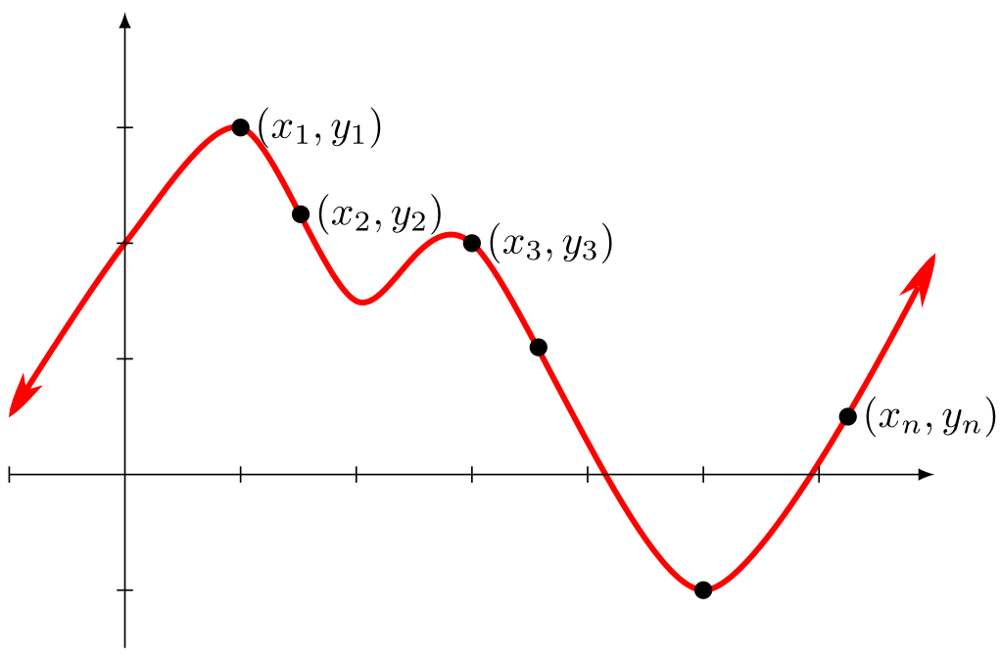
Figure 4.1: Part of a polynomial passing through points.
A polynomial in a single variable is an equation of the form
where and and for any .111
We follow Donald Knuth’s argument for . The degree of the polynomial is defined to be . In this text we will not discuss polynomials of more than one indeterminate variable.
Suppose we have points in (the -plane). Further suppose that we would like to fit a polynomial of degree that passes through all of these points, as illustrated in Figure 4.1.
In other words, we want to find a polynomial such that
We need to discover the coefficients of by substituting the and coordinates for the points into the polynomial. This gives us linear equations in variables: .
We can then simply write this as an augmented matrix and put it in reduced row echelon form. This allows us to read off the values of .
We will follow with a numerical example where we determine the polynomial whose graph passes through the points , and . We begin by substituting our and corresponding values into a system of linear equations in the variables , and .
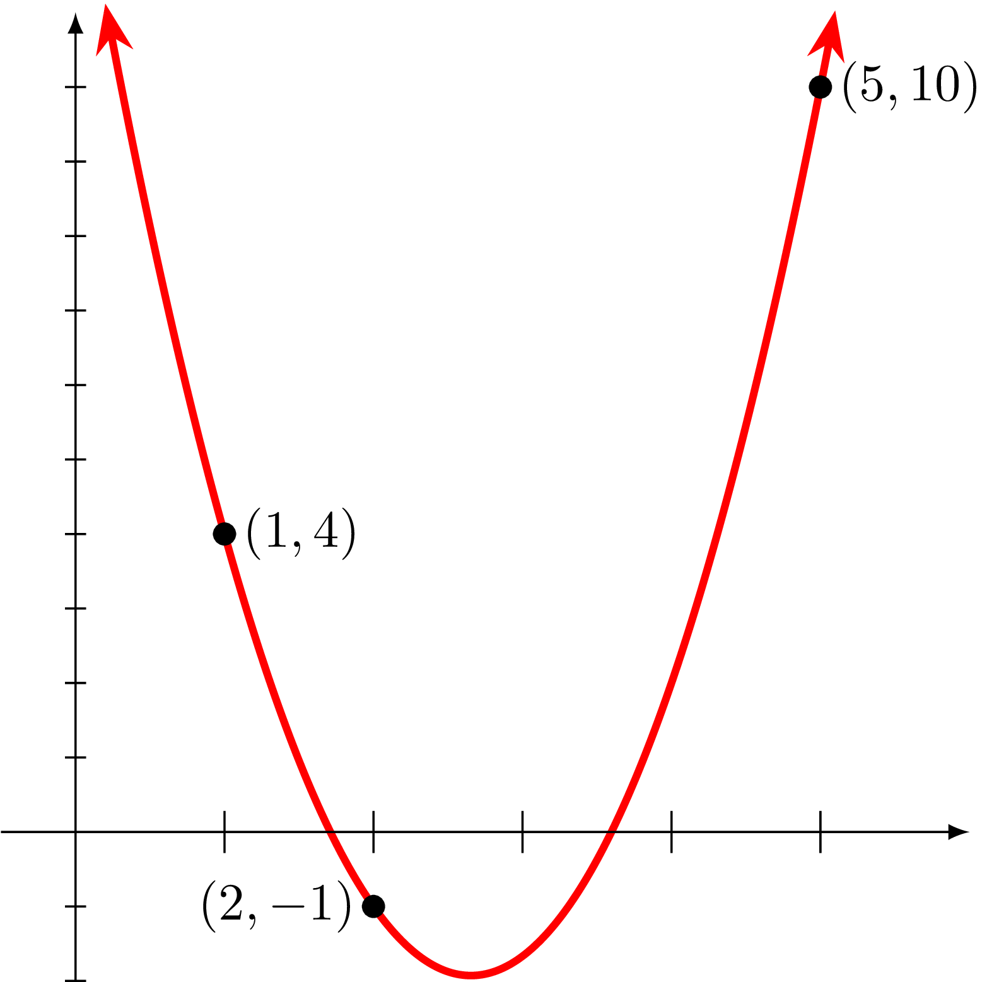
Figure 4.2: A polynomial passing through 3 points.
There are many types of curves besides polynomials which may be fitted to points on a graph. The preferred method is the one that gives the best approximation to points that are between given points (we say these points are interpolated) or points that are beyond all given points (extrapolated points).
We will encounter another method of fitting points, called linear regression, in a later chapter.
Exercises 4.1
1.
Choose three points from the following list and find a degree polynomial to fit them (as in the example). Do the same for a different set of three points. What can you say about the two equations? (Hint: It is possible to plot polynomials using Lampp. Either middle click the mouse icon at the bottom right or down-swipe it. This will activate the polynomial plotter for the Graph panel. Select the use of columns by right-clicking or tapping the row-or-column toggle button near the top right. Then select the column of values you wish to use as the coefficients for the polynomial in a single indeterminate you wish to graph.)
2.
Fit all four points in the above example to a polynomial.
3.
If the coordinate numbers of the points are too large for easy manipulation, it may be possible to transform them with a linear equation to make them smaller and more manageable. Suppose we have three points:
We have values of . Set . Then we have the points
We find the polynomial
then substitute for all values of .
Find the polynomial coefficients for directly. Then find and use it to calculate . Demonstrate that the two forms of are the same.
4.2 Graph Theory and Networks
Graph theory is a fairly new area of mathematics which is used to
create models in economics, social sciences, traffic analysis, medicine,
electrical engineering and
many other fields. It has become a truly vast subject. We will try
to give some flavor of it and show how the ideas of linear algebra are tightly connected.
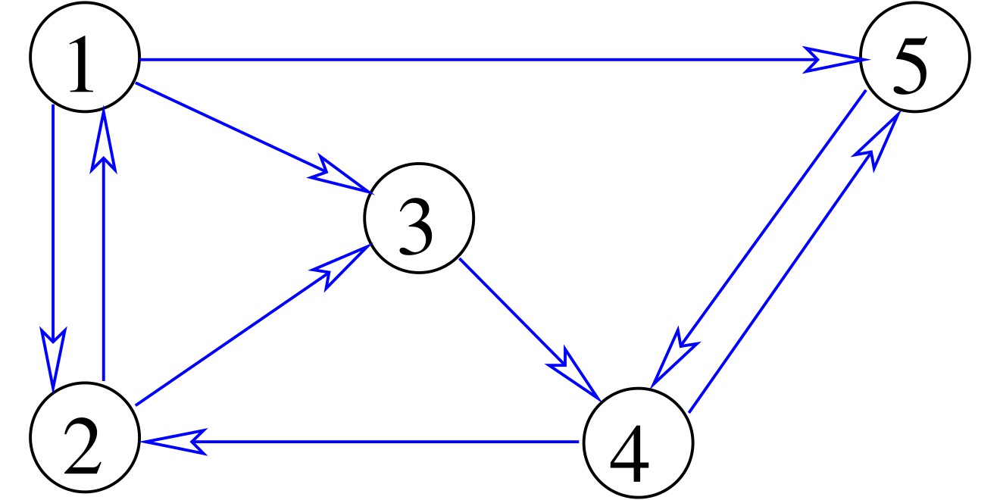
Figure 4.3: A Directed Graph
A directed graph is a collection of points called vertices and
a finite number of edges. Each pair of vertices is joined by one or more edges.
Each edge is assigned a specific direction. In other words, if and are
two vertices, then they can be connected by two edges in opposite directions,
one going from to and
one in the direction of with its origin at . Of course, two vertices
can also be connected by many edges going in the same direction. An example of a
directed graph is illustrated in Figure 4.3.
Any graph can be represented by a square matrix such that is
the number of edges joining vertex to vertex . The matrix
representation for the directed graph illustrated in Figure 4.3 is given below.
Notice that the row number gives us the number of the vertex we come from and the column
number corresponds to the vertex we travel to. This means that means there is
an edge connecting vertex 1 with vertex 5. Since we cannot go directly to vertex 3 from vertex 5, we
have .
A matrix representation of a directed graph that has the conditions that or and that
is called a incidence matrix. This means that there is at most
one edge from any vertex to any other. Also, no edge exists which connects a vertex to itself.
Incidence matrices can be used by sociologists and anthropologists to represent and study group interactions.
These type of matrices can also be used to analyze transportation problems in exactly the same way. We
will first look at a simple transportation system.
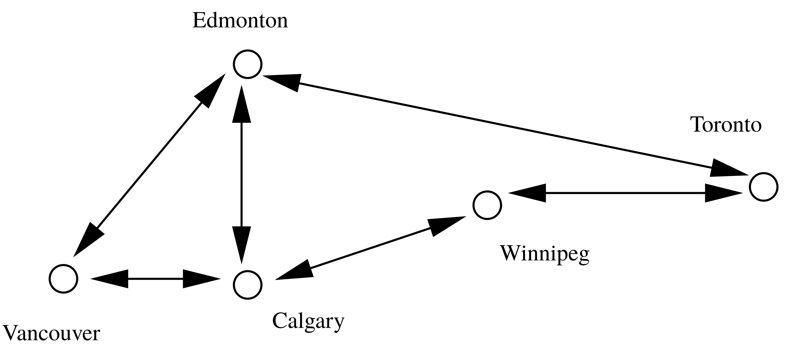
Figure 4.4: Example Airlines
In the sketch of the routes of our Example Airlines (Figure 4.4), we used a line with
two arrowheads to represent when vertices are connected by edges in both directions.
The cities could be given the following numbers for rows and columns:
Vancouver
1
Edmonton
2
Calgary
3
Winnipeg
4
Toronto
5
The incidence
matrix for this diagram would be:
We can easily determine that it is impossible to make a direct flight from Vancouver to Winnipeg
using Example Airlines. Intermediate stops are necessary. Suppose we wanted to know in how many
ways we can travel from one city to another with a given number of stops. There are, for example,
two routes a traveler can take from Vancouver to Winnipeg with two stopovers. A route from
one vertex to another is called a chain or path. A path
which is made up of exactly two edges is called a 2-chain. An example would be a flight
to Toronto from Calgary via Winnipeg. It should be very, very obvious what a 3-chain or an -chain
is composed of.
If we multiply our incidence matrix by itself, we get
We will see that gives us the number of ways we can go from city to city with
exactly one stopover. First, notice that gives us the number of edges that connect vertex
with vertex . In other words, there is one 1-chain that connects the two vertices.
We know from our definition of matrix multiplication
that row 2 of multiplied by column 4 of gives us .
The third column entry in row 2 of says that there is a 1-chain from Edmonton (vertex 2) to Calgary (vertex 3).
The row three entry of column 4 informs us that Calgary (vertex 3) is connected to Winnipeg (vertex 4). Multiplying
the ones in these entries represents the 2-chain of Edmonton-Calgary-Winnipeg. Similarly, the multiplication
of the last ones in the row and column represents the 2-chain Edmonton-Toronto-Winnipeg. This reasoning may be
generalized and used to prove that gives the number of ways to travel from city to city with exactly
stopovers. We omit the proof but use the result to explore our graph further.
There are exactly three ways to fly Example Airlines from Toronto to Edmonton with three stopovers.
They would be:
1.
Toronto-Winnipeg-Calgary-Vancouver-Edmonton
2.
Toronto-Edmonton-Calgary-Vancouver-Edmonton
3.
Toronto-Edmonton-Vancouver-Calgary-Edmonton
Only the first 4-chain does not have Edmonton repeated. Any chain with a repeated vertex is called
redundant.
Suppose an anthropologist has studied a clan of bonobos and observed the pattern of dominance
given in Figure 4.5. Each represents one member of the group.
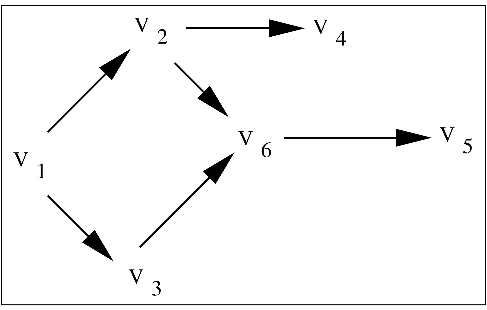
Figure 4.5: Dominance Patterns in a Group
We can see from this graph that the bonobo called directly dominates the bonobos and
but only indirectly dominates the others.
The incidence matrix and some of its powers for this directed graph would be:
Notice that in row 1 of there is a one in column 4 and a two in column 6. This indicates
that there is one way that bonobo can dominate through an intermediary and two ways
that can dominate through exactly one intermediary. Notice that these column positions
in the matrix are equal to zero. This means that does not directly dominate or .
There is no 1-chain connecting the two. Similarly we observe that the two in the matrix shows
that there are two ways that bonobo can dominate with exactly two intermediaries. Notice
that the row 1, column 5 entries in and are zeros. This means that the shortest path connecting
and is a 2-chain.
We can extend this logic to show that if we have an incidence matrix such that has a non-zero entry,
and if the entry for every is zero for , then the shortest path from vertex to
vertex is an -chain. It should be apparent how useful this result can be.
One type of directed graph used frequently in economics, electrical engineering and traffic
analysis is called a network.
A network is a directed graph such that each pair of vertices is
connected by at most one edge and each edge is assigned a number.
The vertices are called junctions and the edges are called branches.
The number assigned to each branch represents the flow along the branch.
In most networks it is assumed that the total flow into a junction equals the
total flow out of that junction. These are the type of networks we will handle since this
property allows us to write the flow through a junction using linear equations.
A network is represented by an augmented matrix since we need an extra column
to deal with the numbers which represent the flow through each branch.
We illustrate how to assign linear equations with reference to Figure 4.6. Since the flow
going into the junction, labeled and , is equal to the flow coming out of the junction, we
can write the linear equation to represent the flow through the junction.
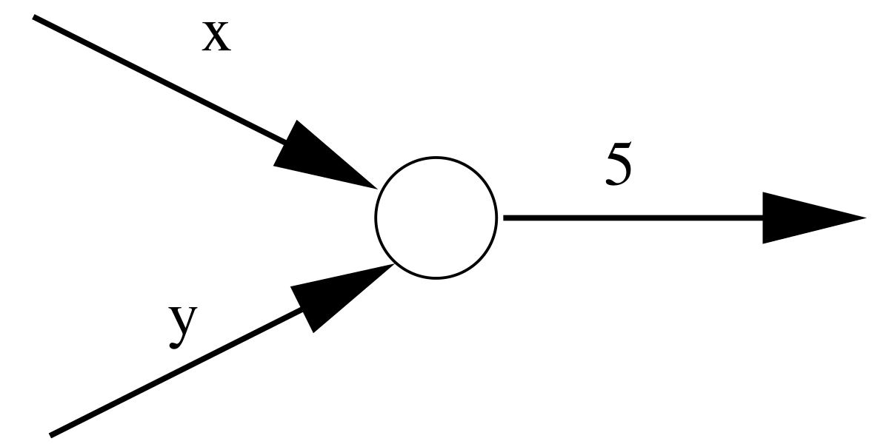
Figure 4.6: A Junction and 3 Branches
A more complicated network is given in Figure 4.7. In this network there are four junctions and
nine branches.
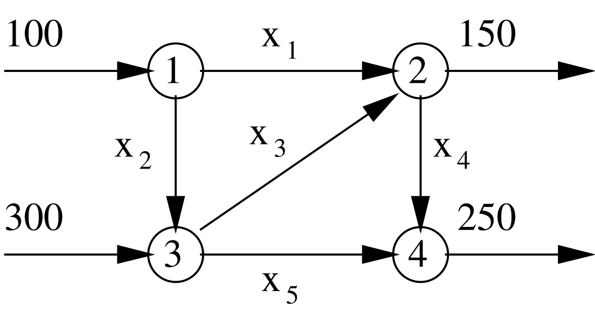
Figure 4.7: 4 Junctions and 9 Branches
We can write the linear equations for each of the four junctions. The variables (and/or numbers)
representing flow into the junction are put on the left
of the equality sign. The variables for flow coming out are placed on the right.
Junction 1
Junction 2
Junction 3
Junction 4
We use algebra to put these equations in a more traditional form.
Junction 1
Junction 2
Junction 3
Junction 4
We create an augmented matrix to hold our values.
Then we use Gauss-Jordan to evaluate the matrix.
The rank of the coefficient matrix is 3 and since we have 5 variables we need 2 parameters. We’ll
call them and . This gives us a solution matrix:
Notice that and cannot be any scalar . In order for the flow to follow the direction of
the arrows, the values for each variable must be positive. So we must have and .
Also, from row 1 of the solution matrix, we must have . This will assure us a positive value for .
From row 2 we have that for and from row 4 we have that . Putting all these
inequalities together, we have
We can then draw a graph to indicate the region containing all pairs which give solutions
which assure us of positive flow through the network. (Negative flow would be like having a toilet backing
up, not a very desirable solution to a water flow problem.)
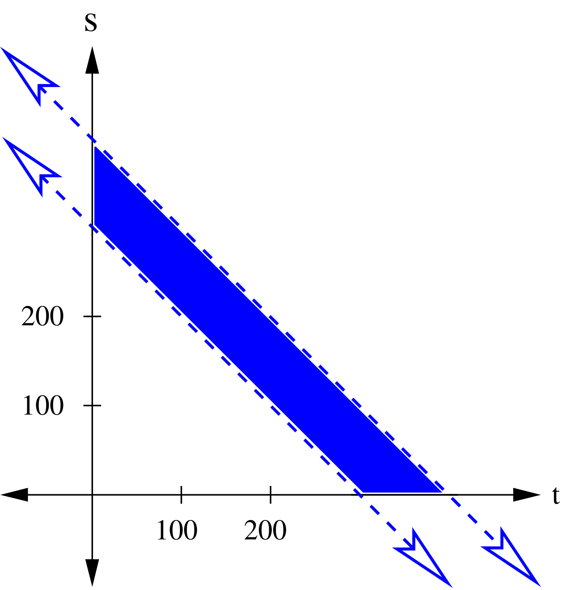
Figure 4.8: ,, and
Exercises 4.2
1.
What would be the incidence matrix for the following diagram?
2.
What would be the incidence matrix for the following sketch?
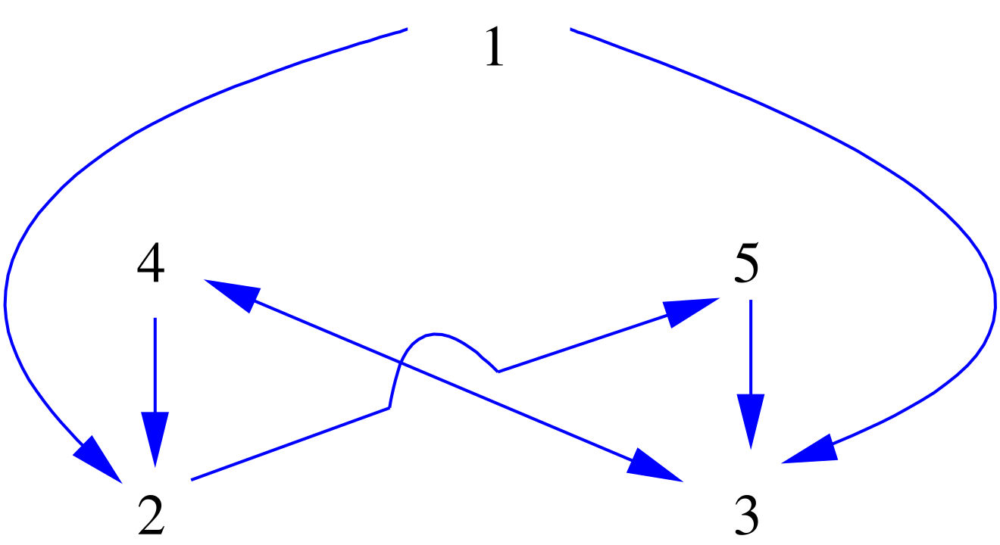
3.
Sketch the diagrams for the following incidence matrices
4.
How many ways are there of traveling from vertex 3 to vertex 4 with exactly two
stopovers for the directed graph given by the matrix in the previous problem?
(HINT: There is an undocumented (until now) feature in Lampp which allows
for the quick multiplication of matrices. First, create a matrix and populate it with
the desired entries. Then press the button on the bottom left.
Accept the option to switch with . Then create a matrix and populate it with
the desired entries. Now, swipe down (or middle-button-click) on the mouse icon
at the bottom right corner. This activates the matrix Multiply options in the Matrix panel. Bring up the Matrix panel
and select the button to multiply with and send the result to . Note that the order of multiplication
is given as . To get , you only need to select the appropriate button. After multiplication, the resultant matrix is automatically displayed.) What is the shortest path from vertex 5 to vertex 4 in the directed graph
represented by the incidence matrix ? What is this path?
5.
Sketch the network for the following augmented matrix
6.
Find all solutions for the network in the previous problem.
7.
Solve for the network for the following diagram.
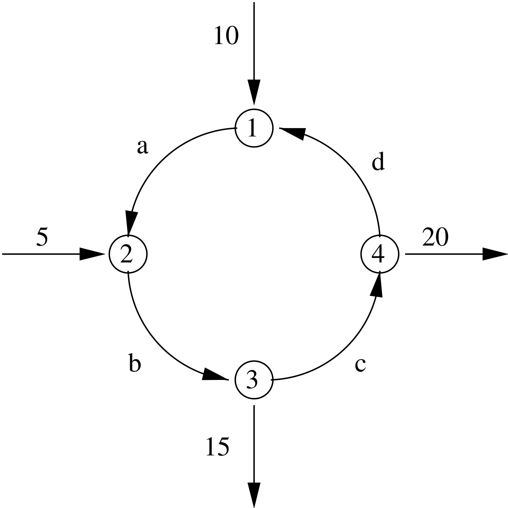
8.
Find all solutions for the network for the following diagram.
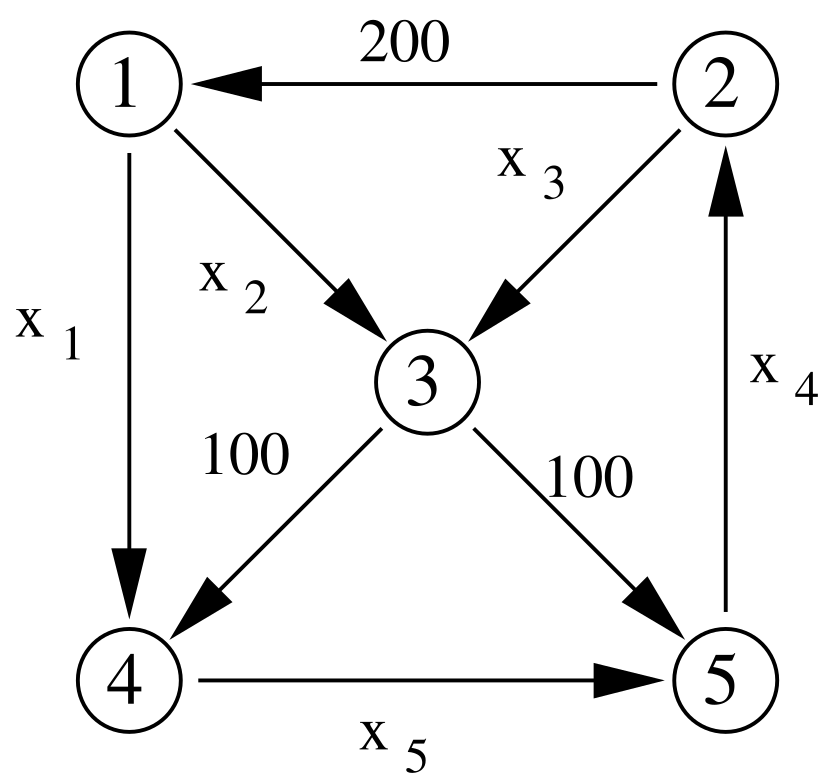
9.
Solve for the network for the following diagram.
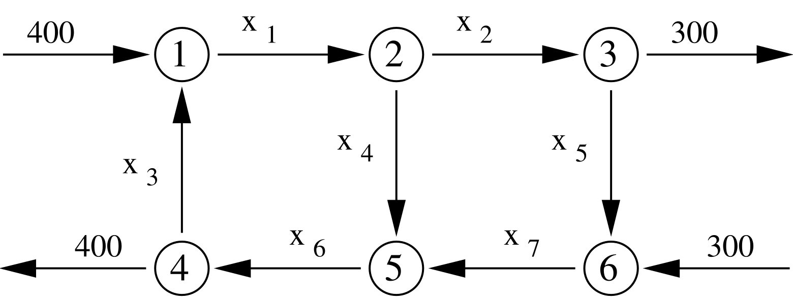
4.3 Electrical Circuits
Analysis of electrical circuits is an extension of the ideas of networks of the previous section. We don’t have
to learn any new mathematics (Alas!), just the physical properties of electricity called Kirchhoff’s Laws.
These laws are usually stated as:
1.
The current flowing into a junction equals the current flowing out of the junction.
2.
The sum of the products of the current and resistance around a closed path is equal to the
total voltage in the path.
We have already remarked that the networks we deal with already satisfy the first law. In order to make sense
of the second law, we need to learn a little bit about electricity and a little more about flow.
Flow is a measure of how many things pass or how much of a thing passes through a branch or junction
during a given interval of time. The number
of cars per hour which travel along a road or pass through an intersection is a flow. The liters of water
which makes its way through a tap in a second is a flow. The amount of stocks traded in a day, oil pumped
through a pipeline in an hour, water down a river in a year, the number of library books
checked out in a month, …, flow,flow,flow,flow. The flow of electricity through
a wire is called the current. It is measured in units called amperes (or amp).
Flow can (and often does) change with time. Flow may vary in a cyclical way, as it does with electricity when
we have alternating current. If the flow remains a constant (the rate never changes), we have
direct current. The circuits we consider will be direct current networks.
A difference in pressure is usually what causes flow. In plumbing, a water pump can be the source of the pressure at one end of a pipe.
In electrical circuits, a battery or a solar cell or something else may be the source of the pressure.
This pressure is called the voltage, given in units called volts (usually abbreviated to the character V). Pressure in a direct current electrical circuit is applied in a direction. In electrical circuits we say that voltage is applied from the
negative to the positive (from - to +). In other words, current will flow from the negative pole
(cathode) of a battery to the positive pole (anode).222
The poles
of batteries are also called terminals or nodes. The fact that we say current flows from the negative
to the positive is an historical precedent set by Benjamin Franklin.
Current can be inhibited completely if there are no wires connecting the cathode to the anode of a battery or any other voltage source.
A closed path is a path which connects a vertex back to itself. A closed
path is also called a loop. If the path is
open, no current can flow. Current can be partially inhibited by a resistance to its flow. A resistor
is a piece of material which converts some of the electricity to heat. Resistance is given in units
called ohms (assigned the Greek omega symbol ). The voltage measured on each side of a resistor obviously cannot be the same. Since the
resistor consumes some of the current, we say there is a voltage drop across the resistor. Each resistor
in a circuit produces a voltage drop equal to the product of its resistance and the current that flows through it.
We write this algebraically as
where is voltage, is current and is resistance. This formula is called Ohm’s Law.
Figure 4.9 shows a closed circuit containing one voltage source and three resistors. The voltage sources are batteries and are
drawn as
, with the current direction flowing from to ,
and the resistors are each represented by the
symbol. The current flow is also shown by an arc in the clockwise direction and labeled .
We now have enough information to use Kirchhoff’s second law to find the current and the voltage drop across each resistor.
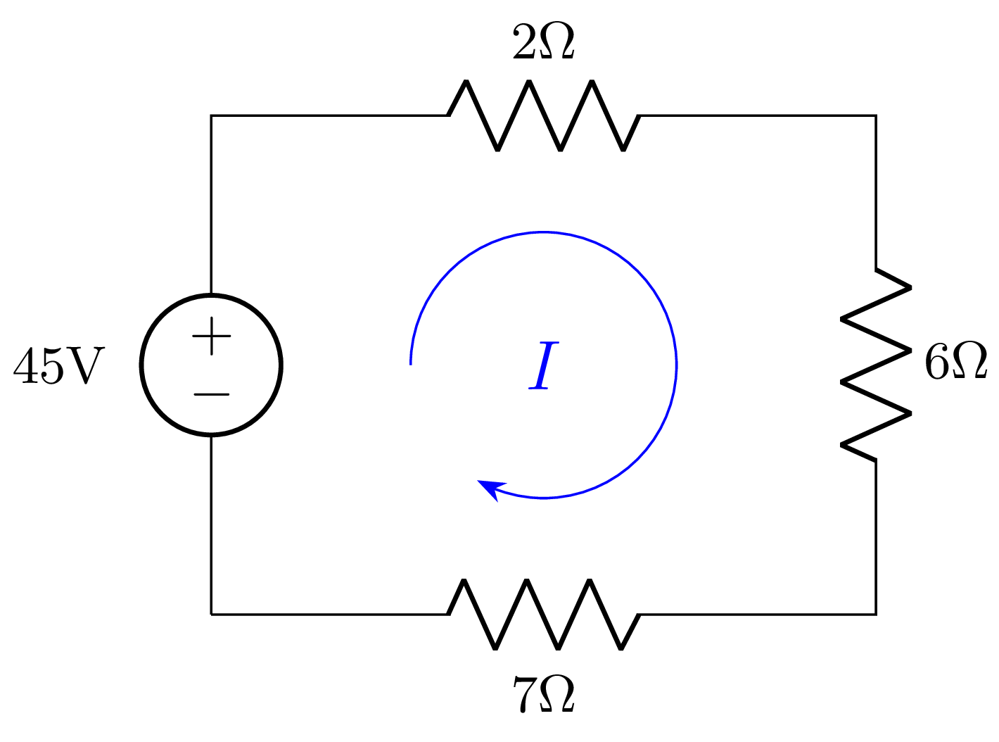
Figure 4.9: A Simple Closed Circuit
We start by assigning variable names to each of the elements of the circuit. would be the voltage
induced by the battery so that volts. Each resistor will be called with a subscript
indicating its rating in ohms, so that we have , and . will stand for the current
we will calculate, in amperes. From the second law we can write
Plugging in the numbers gives us
so amp. We can then work back and show that the voltage drop across , for instance, is
volts.
A more complicated system is given in Figure 4.10.
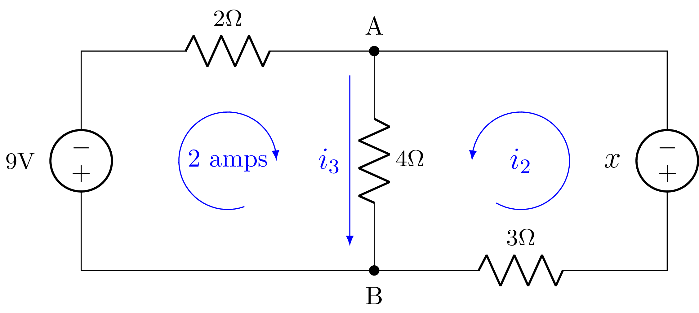
Figure 4.10: Two Voltage Sources and Three Resistors
To evaluate this circuit, we start by applying Kirchhoff’s first law to junction A to get
or
Applying the first law to junction B will give the same result. We now use the second law
to write equations for each of the loops. Starting with the left-hand loop, we can observe
that the battery supplies 4 volts to the loop and the resistors have voltage drops of and
, since both resistances equal 2 ohms. Therefore we have
or
For the right-hand loop we have
This gives us a system of linear equations
Using Gauss-Jordan we can then find that amp, amp and amp.
Exercises 4.3
1.
Find the voltage for the voltage source on the right. (Solve for .)
2.
Find the currents , and for the following circuit.
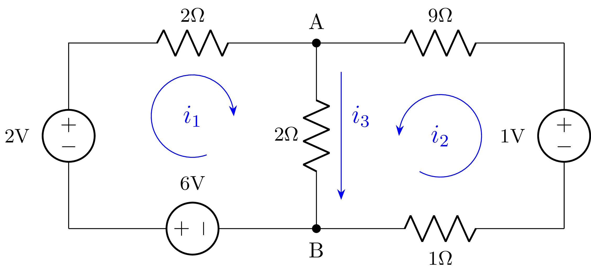
3.
Find values for all six currents for the following circuit. (HINT:
When batteries are connected so that a positive terminal is connected directly
to the negative terminal of the second battery, the result is like having one
battery with a voltage value equal to the sum of the voltages of the two
batteries. Connecting two nodes of the same sign would have the opposite effect.)
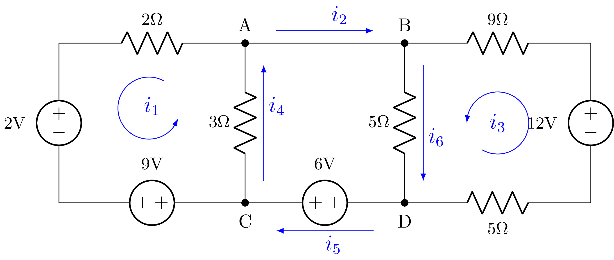
4.4 Cryptography
Cryptography is the art of encoding and decoding secret messages. The use of publicly accessible
communication lines and the need to ensure information privacy has created a surge of interest
in this area. In cryptography, coding algorithms are referred to as ciphers. Ciphers are used
to change readable text (plaintext) to coded text (ciphertext). This process is
called enciphering and the inverse action, creating plaintext from ciphertext, is called
deciphering.
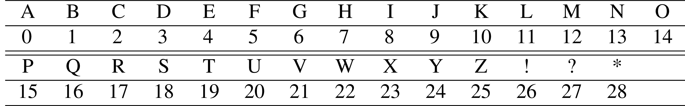
Figure 4.11: A Simple Cipher
One of the simplest ciphers is to replace letters of the alphabet with other letters or numbers.
Suppose we had the correspondence of letters to numbers seen in Table 4.11.
Using this simple cipher, we can encode the message:
where each number is made two digits wide by preceding it with a zero if necessary.
This is the same procedure as performed by a computer when something is typed on the keyboard. The
symbols on the keyboard are mapped onto unique numbers. The reverse happens when these numbers are
sent to the monitor or printer for display.
This simple cipher is obviously too simple for serious secrecy. A more secure cipher system can
be obtained by separating the plaintext into groups of letters and replacing each group with
cipher letters. This is called a polygraphic system.
We will look at one such method,
which uses matrix multiplication, called Hill ciphers.
The most basic form of a Hill cipher involves breaking up a plaintext message into pairs of letters.
An extra letter may be added to the plaintext to make an even number of characters. Our message would
be grouped as
We then choose an arbitrary matrix of non-zero integer numbers modulo 29. The reason
we choose to work in is because that is how many characters we need (and the
field is available in Lampp).
Suppose we choose the following matrix
We then write each pair of numbers as column matrices and multiply each matrix by . For example,
for the first pair of numbers we would have
We continue the process to get all the pairs of numbers for our ciphertext.
This corresponds to the following pairs of characters
XU JQ JT IP CL !C LL M? DN IB TX
which we would type up as
XUJQJTIPCL!CLLM?DNIBTX
and send off to our Fearless Leader at Secret Headquarters in Potsylvania.
To decipher the message, the ciphertext is broken up into pairs, translated into numbers and then
each pair of numbers is multiplied by the inverse of the enciphering matrix . Simply, implies
that , which gives us , where is the enciphering matrix, is the matrix
containing the pairs of plaintext numbers and contains the pairs of ciphertext numbers. Of course, one
must be careful that has an inverse. We will look at this more closely in the chapter on determinants.
It is fairly easy to decipher a Hill cipher where the letters are grouped in pairs even if the
encoding matrix is unknown (it would mean trying out 736 22 matrices over ). However, the
difficulty of breaking a Hill cipher through trial-and-error increases enormously when larger groupings
are used and the modulus is unknown.
Exercises 4.4
1.
What is the inverse of the enciphering matrix in our example of a Hill cipher.
(HINT: Use Lampp and select the Integer Modulus a Prime option in the Field panel and enter a
modulus of 29.)
2.
Decode the following Hill ciphertext given that the enciphering matrix is
OCVALDDG*GY?Y!OMD*KSRWREY*KI
Assume that the characters are grouped in pairs and encoded into numbers with the simple cipher of
this section. (HINT: It is possible to use the MULTIPLY option in the MATRIX menu of Lampp to
ease a lot of the computation. We can only multiply square matrices,
so we need to group the cipher
column matrix in pairs to form square, augmented matrices. If you don’t know how to use the MULTIPLY
option, read the exercises in the section on graph theory in this chapter. Better yet, do the
exercises.)
4.5 Probability and Stochastic Matrices
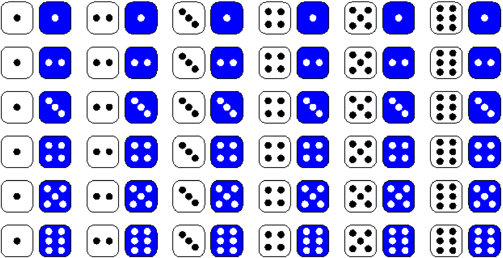
Figure 4.12: All possible outcomes of throwing a pair of dice
When people assign a probability to an event, they are assigning a real number, , such that
, and which
represents the ratio of the number of ways the particular event can occur divided by the
number of all possible events. When a coin is tossed, the probability is that a heads
will show when the coin comes to rest. This number comes from the fact that there is only one way that
a heads can show out of the total number of ways the coin will land (heads or tails). The same type
of calculation
gives us that the probability is that the sum of the numbers on the faces of a pair of
thrown dice will be four. First we assume that the dice are thrown and we think of one die as the first die
and the other as the second. There are six different ways the first die can fall. For each of these ways,
there are six different faces the second die can show. Therefore there are different possible
outcomes (possible events). There are three ways that numbers can show on the top faces so that they add up
to four. The first die could have a showing, which means the second must show . The second could have
, so the first must show . Also, both could show . So we see that the probability is
that the total on both faces is . This assumes that each outcome is as likely as any other.
If an event can never occur, the probability is . If the event can’t fail to occur, the probability is .
The probability of throwing 13 with a pair of dice is 0. The probability that the sum of the numbers is
on a pair of dice is 1. The probability that an event will not occur is one minus the probability
that it will occur. The probability that a two and a four will show on a pair of thrown dice is
. The probability that we won’t have a two and a four is .
(The symbol is short for not.)
Probability is an estimate of real events. Though the probability is that a 5 will show when
we throw one die, this does not mean that if we throw a die six times that a 5 will come up once.
It does mean that it is reasonable to assume that a 5 will appear. It is a very good bet.
A probability matrix is a square matrix whose entries are probabilities and
for which the sum of the entries in each row is 1. In other words, if is a probability matrix, then
A probability matrix is also called a stochastic matrix.333
The word
stochastic comes from the Greek word for a person who predicts the future.
Stochastic matrices have the nice property that they are closed under matrix multiplication. If we have
that and are both stochastic matrices, then is also a stochastic
matrix. Let’s prove this.
Proof.
The sum of the entries in the th row of is
∎
One use for probability matrices is to describe phenomena which can have a finite
number of different states
any of which can be observed to occur at various times .
For example, your blood pressure could be
measured every hour and given one of the three ratings: high, normal or low. So your initial state, , could be
rated as high, the next hour could find your blood pressure unchanged (at , your state is high)
and then in the third hour your blood pressure state could be normal. We call such an arrangement of states and observation times a system. If the probability that a system is in a given state at a time is only
dependent on the state at time , then the system is called a Markov process.
Each path from an initial state to some other state is called a Markov chain.
The state of such a system does not depend on any state previous to the one which immediately preceded it.
Also, it does not occur because of the time itself. Thus, if your blood pressure state
at one o’clock PM is high only because of its rating at noon, and not because it was
high three hours previously or that it always shoots up after lunch, then
your blood pressure system could be called a Markov process and your current blood pressure state could
be considered the end of a Markov chain.
Let’s make up an example of how a researcher might use a Markov process to predict future events. Suppose that
an intrepid scientist discovered that there was an 80% chance that the child of a person who liked country music
would also like country music. Also, there is a 15% chance that the child of a person who
doesn’t care for country music will spend countless hours swooning over Hank Williams, Sr., et al.
What percentage of the population would like country music after 4 generations given
that, initially, 40% of the population were tuning in to country music stations?
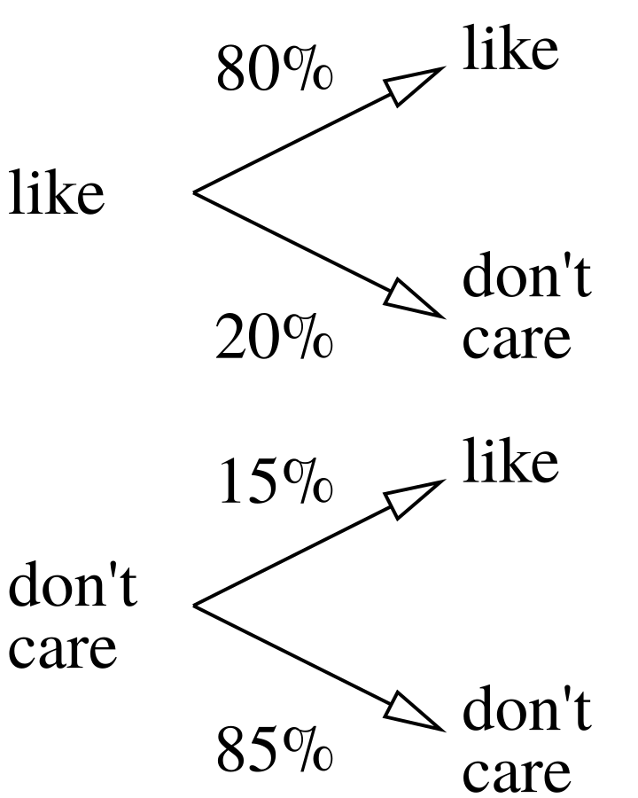
Figure 4.13: Tree Diagrams for a Markov Process
We start by drawing a special type of network called a tree. A tree is a network in
which each junction has at most one branch with flow into the junction and at least
one junction with no flow into it. For systems
representing Markov processes, we are dealing with
possible states for each junction, so any junction will have either branches flowing to
other junctions or no branches flowing to other junctions. The tree diagrams for our country music
system are given in Figure 4.13.
We use these diagrams to create the transition matrix for the Markov process.
This will allow us to calculate each Markov chain.
We first convert the percentages to probabilities (so that , for instance).
Then these probabilities are used to create the columns for the transition matrix.
The transition matrix can now be used to calculate the next state for any given state. For example,
given that initially of the population likes country music, the next generation would have
From this we conclude that of the next generation will like country music and will be
ambivalent. To calculate the state of the Markov process after generations, we simply multiply
the column matrix containing the initial state probabilities by . For four generations of
country music listeners we would have the transition matrix
We use this transition matrix to calculate the percentage of great-great-grandchildren
who will be enjoying country music.
This shows that roughly of the population will like country music after four generations. We
would conclude that the percentage of the population who listens to country music remains fairly constant
from generation to generation.
Exercises 4.5
1.
Determine if the following matrices are stochastic.
a.b.
c.d.
2.
Suppose a census indicated that of the children of people with a university education
will go on to university and that of the children of people without a university education
will obtain a degree. Represent the possible transitions between states and their probabilities with
tree diagrams. Determine the transition matrix. Assuming that this trend remains constant between
generations and that initially of the population is university-educated,
what percentage of the population will not have a university degree after 3 generations?
3.
Repeat the previous exercise assuming that the initial population has with university
education.
4.
A taxi company serves passengers in a city divided into three zones. Records indicate that
of the passengers picked up in zone 1, half request to be taken to destinations in zone 1, 30%
wish to go to zone 2 and the rest ask to be taken to zone 3. Of the passengers picked up in zone 2,
40% will go to zone 1, 20% to zone 2 and 40% wish transportation to zone 3. Of the passsengers
picked up in zone 3, 20% will go to zone 1, 60% will go to zone 2 and 20% will be let off in
zone 3. At the beginning of the day, 60% of the taxis are in zone 1, 10% in zone 2 and the rest are
in zone 3 (30%). After all the taxis have had one rider, what is the distribution of taxis in the
three zones? After they all have transported two riders?
4.6 Leontif Economic Models
A mathematical model is a set of equations which is used to mimic a real-world
system. A model is considered accurate or successful if it can be used to predict the behavior
of a system as situations change. The set of equations we use to determine voltages in an electrical
circuit is one such model. It is considered very successful as it approximates voltage measurements in
real circuits very closely and the variables which primarily affect the system are few and well understood. Models
in economics are rarely so successful because the number of things which can affect a market system are
enormous and inter-relationships can be very complex. Even simple models, though, can be useful to provide
indicators of behavior of an economic system.
The Leontif Open Production Model (often referred to as Input-Output Analysis) can be
used to describe gross relationships between various industrial sectors. In particular, it can be used to
analyze how much output each sector must produce in order to meet consumption and export demands.
We start by dividing up an economy into a number of industries. For example, we might have transportation,
steel, agriculture, entertainment, etc. Each industry uses resources which we call inputs. The outputs from
each sector are the services or manufactured goods provided by the people and technologies associated
with the industry. The inputs to each industry are made up in part by the outputs of other sectors. The
agriculture industry, for example, uses the output of many industries, such as transportation (trucks, tractors),
oil (fertilizers, motor fuel) and lumber (wood). We use an input-output matrix to summarize the
interdependence among the industries we are interested in studying. An input-output matrix typically looks
like:
The entry of the matrix gives us the output from Sector that is used as input to Sector . It is usually most
convenient to express the entries in monetary units, so that a column lists the dollar values of every input
the sector requires to produce $1 of output.
The model must also take into account consumers who are not members of the represented industries. These
consumer requirements are called the demand on the economy. This demand is represented by a column
matrix indicating the amount required from each industry:
So let us suppose that an economy was composed of only three industries. We will say these are manufacturing,
agriculture and energy. We will say that it takes $0.20 worth of manufactured goods, $0.25 worth of
energy production and $0.05 of food inputs in order to produce $1.00 of agricultural produce.
Furthermore, the manufacturing sector
requires $0.15 of agricultural produce, $0.15 of its own product
and $0.30 worth of energy to make $1.00 of manufactured goods. Finally, we
stipulate that the energy industry requires $0.05 of agricultural output and $0.10 worth of manufactured
products to stay in business and that it only consumes $0.01 of its own output.
How much should each sector produce in order to meet the demand for exports of
$2 billion of agricultural produce, $1 billion of manufactured goods and $3 billion worth of energy exports?
First, we set up the input-output matrix
We let be the demand matrix (in billions of dollars)
We let the amount the agricultural sector produces, the value of the manufactured goods created and
the value of the energy created by the energy sector. We wish to know how much of each of these values
is left after all of the industries satisfy their requirements. In other words, we need
[agricultural goods used in production]
[manufactured goods used in production]
[energy used in production]
We then determine formulas for the amounts used in production
[agricultural goods used in production]
[manufactured goods used in production]
[energy used in production]
If we let
then what we are asking for can be expressed simply as
We then equate this with our demand to get
To solve this equation, we substitute for and then do a little manipulation
which finally gives
Applying arithmetic to our example then gives us
Applying Gauss-Jordan elimination gives us
Solving for our demand matrix gives us
We round the results to two decimal places to get
In other words, we need the agriculture sector to produce $2.71 billion worth of produce, manufacturing
$2.33 billion, and energy should output $4.42 billion in order to meet the demand.
Exercises 4.6
1.
Suppose a corporation has three divisions; a plastics division, a controllers division and a
semiconductor division.
For each dollar of production, the plastics division requires $0.10 of its own product, $0.20 worth of
controllers and $0.10 worth of semiconductors. The controllers division requires no plastics, $0.10 worth of
controllers and $0.20 worth of semiconductors. The semiconductor division uses $0.10 worth of plastics and $0.10
of controllers. It does not use any of its own output. How much should each division produce if there is a demand
for $10 million of plastics, $20 million of controllers and $5 million of semiconductors?
2.
Suppose, for the previous problem, the demand for semiconductors doubled and the demand for controllers
dropped by 50%. What should the production for each division be?
3.
Create an economy with four sectors and solve it for three different demand matrices.
4.7 Chemical Reactions (Stoichiometry)
Chemistry is the branch of science concerning the composition, structure and properties of matter and the
transformations that matter undergoes. Stoichiometry (pronounced stoy-kee-OM-uh-tree) is the branch of
chemistry which deals with the quantitative relationships derived from chemical equations and formulas.
Ordinary matter is composed of atoms which are conserved in chemical reactions. Atoms may join together to form
particles called molecules which share certain properties.
Chemical reactions often involve the
transformation of different types of molecules. Since the number of atoms are conserved, chemists express
this equality as balanced equations. An example might be:
The balanced equation states that 2 molecules of sodium (Na) mixed with two molecules of water (H2O) will
produce 2 molecules of sodium hydroxide (NaOH) and one molecule of hydrogen gas (H2).
One molecule of sodium contains one atom of sodium. One molecule of water is composed of 2 atoms of
hydrogen (H) for every atom of oxygen (O). The white, caustic sodium hydroxide is made up of one atom each
of sodium, oxygen and hydrogen. Hydrogen molecules are usually composed of two atoms of hydrogen. We can
therefore write the balanced equation as a system of linear equations.
Na
H
O
Or, using familiar notation:
It should be obvious which values of correspond to which number of molecules.
Usually we have an unbalanced equation which we would like to put into a balanced form. For example,
given the following unbalanced equation:
To balance this equation, we assign appropriate variables and write out the system of
linear equations. Then we solve the system and write out the balanced equation. We would start with:
which gives us
which can also be written:
where is the number of molecules of chlorine, is the number of molecules of sodium bromide,
is the molecules of bromine and is the molecules of sodium chloride (salt).
We write this as an array and solve it using Gauss-Jordan elimination.
which reduces to
Using a parameter, we let to get , and . Since is arbitrary, we assign and
get that , , and . This means our balanced equation would be:
Exercises 4.7
Balance the given chemical equations for the following exercises.
![Eight dominoes are arranged in a row with only some standing on end. The first three are labeled step 1. They show the first two of three dominoes tilted to the right, knocking into the third, erect domino. Further right, an ellipsis indicates there could be many dominoes before the next three shown. The middle three dominoes are labeled step 2. They show the first two of three dominoes tilted to the right, knocking into the third, standing domino. Another ellipsis follows. The last two dominoes are erect and not labeled.](domino2.png)


![An image of the screen of a device showing the Lampp program with two of the elements highlighted as selected of a 4 by 4 matrix of Rational numbers. The Edit panel for a rational number is showing after the Edit button was selected. The rational number is at the top of the Edit panel and it also shows an additive inverse button and another button to get the multiplicative inverse of the rational element. A software keypad is also shown, just below the Set button, which is pressed or clicked to send the rational element contents to the two previously selected elements of the matrix.](Linalg1_Lampp_edit1.png)
![A rectangular axis with horizontal x-axis with -2,-1,2 ticked, vertical y-axis with 5,4,3,2,-1 ticked, a solid blue line through the origin and the point (1,1), a dashed blue vertical line through x=1 and a dashed blue line through y=1 and the point(1,3). The space between the vertical dashed line, above the solid line and below the other dashed line is colored blue and has arrow to indicate that the blue continues right and upwards withing the bounds of the lines. It is made apparent that the blue color does not overtop the dashed blue lines but does include the points of the solid blue line.](li6.png)
![[Uncaptioned image]](dg1.png)
![[Uncaptioned image]](elec2.png)